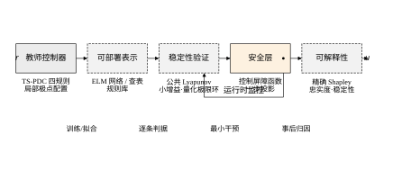
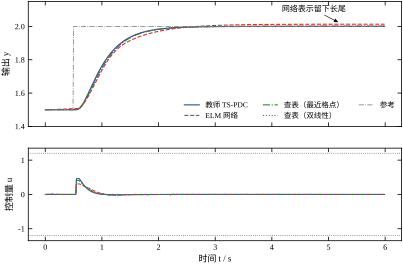
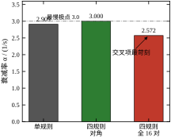
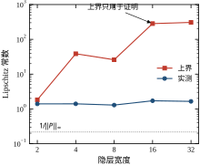
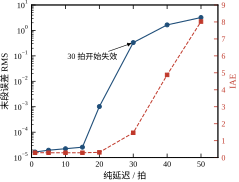
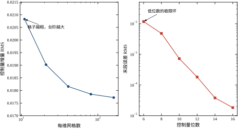
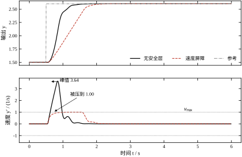
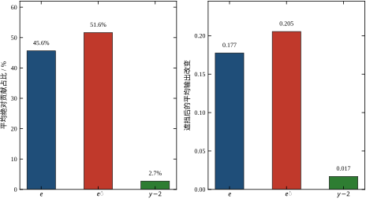
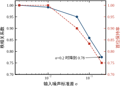
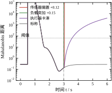

第 66 到 70 章把五类“会学”的控制器依次摆开：查表、模糊、神经网络、迭代学习、强化学习。它们的共同点是控制律不再由人写成一条公式，而是由样本、由优化、由经验攒出来。这带来两个立刻要还的欠账。第一，攒出来的东西凭什么稳定？第 44 章的 PID 可以用劳斯判据、用相位裕度说话，一个三千参数的网络没有对应的判据。第二，攒出来的东西说不清道理。现场出了偏差，工程师问“它为什么这么给”，答“网络算出来的”，这句话在事故分析会上等于没说。
这两个欠账看起来是两件事，工程上却总在同一处爆发。一条控制律之所以“不可信”，往往不是因为算错了，而是因为没人能同时给出它的稳定证据和行为解释。稳定证据让你敢放手，行为解释让你敢改参数；缺一个，系统就只能停在演示阶段。
本章的写法是把两件事绑在同一个对象上讲。先造一个“教师”：一个四规则的 Takagi-Sugeno 模糊模型加并行分布补偿（TS-PDC），它结构透明、可以逐条写出局部模型，也可以整体做李雅普诺夫分析。再把这个教师换成三种不同的表示——教师本身、一个 ELM 网络、一张查表——它们拟合的是同一个函数，误差都在 0.13 以内，可稳定性判据的“可下手处”完全不同：教师有前件、有局部矩阵，能直接写 LMI；网络只有权重，只能退回小增益；查表连解析式都没有，只能谈量化误差与极限环。同一根性能曲线，三种证明成本，这是本章的第一条主线。
第二条主线是可解释性。用精确 Shapley 把“这一拍的控制量”分摊到三个输入上，再用遮挡实验检查这份分摊是否忠实，最后加噪声重算，看它是否稳定。三条检查对应三个工程问题：说得清吗、说得对吗、每次说得一样吗。三者都过，解释才能进验收报告；只过第一条，那只是“看起来有道理”。
先把结论摊开。同一教师的三种表示，跟踪性能分别是 IAE 0.2883、0.3529、0.3014，最好的与最差的差 22%；而公共李雅普诺夫的衰减率从单规则的 2.9091 掉到四规则全配对的 2.5716，一收紧配对条件就掉 11.6%。小增益判据给出的临界增益是 0.16，实测的抖振边界是 3.5，判据保守了约 22 倍（窄网 18 到 23 倍，宽网升到 65 倍）——它不是没用，而是只能用来排除，不能用来验收。安全层能把峰值速度从 3.643 压到 1.000，代价是 IAE 涨 90.7%。解释侧，三个输入的贡献占比是 45.6%、51.6%、2.7%，遮挡实验给出同样的排序，两者首位比 12.16；而输入噪声标准差到 0.2 时，解释的秩相关掉到 0.775，首位保持率 0.75——解释本身也是有稳定域的。
现场对智能控制的不信任，可以拆成三句具体的话。
第一句是“它会不会突然发散”。这句话问的是全局性质：不是这一条轨迹好不好，而是所有可能的初值、所有可能的工况下，闭环会不会跑到无穷远。回答它需要李雅普诺夫函数，而李雅普诺夫函数的存在性对一般非线性系统是 NP 难的，所以工程上只能退一步：在给定的结构假设下（比如 TS 模糊模型的前件有界、局部模型已知），把它化成一组线性矩阵不等式。
第二句是“它为什么这么给”。这句话问的是单点归因：此刻 e=0.12、\dot e=-0.30、工作点偏了 0.05，控制量 -0.41 里，三份各占多少？回答它需要一份“分摊规则”，而且这份规则必须满足一条硬约束：三份加起来要等于总输出与基线之差，不能多也不能少。这就是 Shapley 值的效率性公理，也是它比“看权重”“看梯度”更适合做验收材料的原因。
第三句是“换个批次它还一样吗”。这句话问的是可重复性：同一工况跑两遍，解释是否一致；输入有 1% 的噪声，排序会不会翻。回答它需要把解释当成一个统计量来做稳定性分析，而不是当成一次计算结果。
三句话对应三类工具：李雅普诺夫与小增益回答第一句，Shapley 与遮挡回答第二句，秩相关与首位保持率回答第三句。本章 71.2 节把这四类工具写成公式，71.6 节用同一组实验数据把它们摆在一起对照。
图 71-1 是本章的流水线。左边是教师，一个四规则的 TS-PDC：按输出 y 把工作区间切成四段，每段一个局部线性模型，每个局部模型单独做极点配置，运行时按隶属度加权。中间是可部署表示：可以直接用教师（规则库很小，嵌入式能跑），可以把它蒸馏成一个 ELM 网络（权重少、算得快），也可以量化成一张二维查表（最省算力，但没有解析式）。

后三段是本章与前面几章最大的不同：表示选定之后，还有验证、安全、解释三道关。验证关回答“会不会发散”，安全关回答“越界时谁来兜底”，解释关回答“为什么这么给”。三道关都不是可选项：验证关缺了，系统只能做演示；安全关缺了，一次越界就可能撞坏设备；解释关缺了，出了事故无法定责，改进也无从下手。
把这三关串起来看，会发现一条隐含的次序：先有结构，才有判据；先有判据，才敢加安全层；先有安全层，解释才有意义。原因是安全层会改写控制量，如果解释的是“加安全层之前的网络输出”，那解释的对象根本不是现场真正执行的那个量。本章的顺序因此固定为：教师 → 表示 → 验证 → 安全 → 解释，任何一步都不能提到前面去做。
工程讨论里“稳定”这个词至少被用在三个不同的层次上，混用会直接导致误判。
定理级：存在一个正定函数 V，沿闭环轨线严格递减。这是最强的结论，给了就不需要再讨论初值。TS-PDC 的公共李雅普诺夫条件属于这一层，代价是保守：要求所有局部闭环共用一个 P，可行域比“每个局部各用各的”小得多。
判据级：某个充分条件成立，比如小增益 L\lVert P\rVert_\infty<1。它不给 V，只给“如果满足就不会发散”。这一层的价值在于能排除：条件不满足时不能下结论，条件满足时一定安全。本章实测这个条件在所有网络宽度下都不满足（乘积在 5.9 到 7.9 之间），而系统实际跑到增益 3.5 才抖振——判据的保守度是窄网 22 倍、宽网 65 倍。
实测级：跑一遍，看末段残差与抖振。这是最弱的一层，却常常是唯一能落地的一层。它的风险是“没测到的工况”，所以必须配合 71.10 节的故障注入与在线监控一起用。
三层的关系不是替代，而是从强到弱逐层兜底：定理级能给出就不必测，给不出就用判据级筛，判据级也给不出就靠实测级加监控。本章后面每一张表都会标明它属于哪一层，这是读表时最该先看的一列。
可解释性同样不是一件事，它至少有三层。
结构级：模型本身长得就像人话。规则库“当 y 在 1.9 附近时，用 K=15.4 那套增益”，这句话现场工程师一听就懂。结构级的优点是免费——不需要任何算法，模型写完解释就写完了；缺点是只能解释“大致在干什么”，解释不了“这一拍为什么是 -0.41”。
归因级：给定一个具体输入，把输出分摊到各输入上。线性模型的系数就是归因，但系数是全局的，遇到强非线性就不准；Shapley 值按“去掉这个输入会少多少”来分摊，对任何黑箱都成立，代价是要算 2^n 次前向。本章三个输入、八个联盟，一次归因 8 次前向，可以实时跑；若输入是 20 维，2^{20} 就做不到了，只能改用采样近似。
稳定性级：同一份归因，在输入有小扰动时是否还成立。这一层最容易被跳过，却最影响验收。本章的实测是：噪声 \sigma=0.01（相当于传感器噪声的 1%）时秩相关还有 0.992，看起来稳如磐石；到 \sigma=0.2 时掉到 0.775，首位保持率只剩 0.75——也就是说四次里有一次，最主要的影响因素会被指错。
三层的用法也是叠加的：结构级写进操作手册，归因级写进调试工具，稳定性级写进验收报告。反过来，只做结构级、不做归因级，工程师遇到异常只能“重启试试”；做了归因级、不做稳定性级，则会把噪声当因果，越解释越乱。
把稳定性与可解释性分开写，是更省事的做法，但会漏掉三条只有放在一起才看得见的联系。
第一条是判据依赖表示。同一个函数，写成 TS 模型就能做 LMI，写成网络就只能做小增益，写成查表就只能谈量化。这不是数学技巧的差别，而是“你选择哪种表示，就等于选择了哪种证明方式”。所以 71.3 节的设计流程里，“选表示”这一步必须同时考虑性能与可证明性，不能等表示定了再想怎么证明。
第二条是安全层改写被解释的对象。加了速度屏障之后，现场执行的控制量不再是网络输出，而是投影后的值。如果解释工具仍在解释网络输出，它解释的就是一个不存在的量。本章的处理是把安全层放在解释之前（图 71-1 的次序），解释的对象是投影后的量，代价是归因里混进了“安全层介入”这一项，需要在报告里单独标出。
第三条是监控的残差选择决定你能看见什么。本章 71.10 节的实测最能说明问题：用 (e,\dot y) 两维残差，执行器增益掉 30% 完全看不见——反馈把这个偏差抹平了，稳态下 u 本来就是零。加进 u 变成三维，卡滞的报警从 910 ms 提前到 620 ms，可增益损失仍然看不见，因为稳态下它确实不能观。能看见什么，由残差的选法决定，而不由故障的严重程度决定——这句话是可解释性在工程上最实在的用处。
设想一次真实的偏差：某批产品上来之后，回路连续几拍给出接近限幅的控制量，输出冲过目标 6%，然后慢慢爬回来。现场会问三个问题，本章的三部分分别回答它们。
“是不是要发散了？”要靠 71.6 节的判据与实测。\alpha=2.5716 给出的是指数收敛的下界，30 拍附近的延迟拐点给出的是“离边界还有多少余量”。两者都答“不会发散”，但理由不同：一个靠证书，一个靠边界，报告里必须分开写。
“它为什么给这么大？”要靠 Shapley。把那一拍的 -1.1 分摊成 e、\dot e、y-2 三份，看是哪一项在推。若 e 占九成，说明是误差驱动，属于正常；若 \dot e 占九成且符号与 e 相反，说明阻尼项已经在刹车，控制量虽大却是合理的。
“下次还会这样吗？”要靠解释稳定性与监控。\sigma=0.05 时首位保持率 0.90，意味着十次里有一次会指错主因；监控阈值 64.15、卡滞 620 ms 检出，意味着同类偏差下次会被记录到。
三个问题对应三份材料。缺第一份，不敢用；缺第二份，出了偏差只能猜；缺第三份，同样的问题会反复发生。本章按这三个问题组织，而不是按数学工具组织——这也是为什么开头先摆三句话，而不是先讲李雅普诺夫。
算例沿用第 66 至 69 章的对象，四章指标可以直接对照：
y''=-2y'+K(y)u,\qquad K(y)=4+6y \tag{71-1}
采样 10 ms、纯延迟 5 拍、限幅 \pm1.2，工作点从 1.5 阶跃到 2.0，仿真 6 s。教师的四条规则取在 y=1.5,\,1.9,\,2.3,\,2.7，对应局部增益 K_i=13.0,\,15.4,\,17.8,\,20.2；每个局部模型用极点 (-3,-4) 配置，得到四组反馈增益：
| 规则 | 局部增益 K_i | k_1 | k_2 |
|---|---|---|---|
| 1 | 13.0 | 0.9231 | 0.3846 |
| 2 | 15.4 | 0.7792 | 0.3247 |
| 3 | 17.8 | 0.6742 | 0.2809 |
| 4 | 20.2 | 0.5941 | 0.2475 |
表 71-1 四规则 TS-PDC 的局部增益与反馈增益
这张表里藏着一个容易被忽略的事实：四组增益并不是四条独立的控制律，它们恰好是 k_1=12/K、k_2=5/K 的采样，也就是说 PDC 在这个单变量对象上等价于增益调度——用当前的 K(y) 去除掉增益变化。这解释了为什么 71.6 节的规则数扫描里，规则从 2 条加到 7 条，IAE 只从 0.2884 动到 0.2883：插值已经把非线性抵消掉了，再加规则只是把同一条曲线切得更细。
按 71.3 节的流程走完，最终的一组数字是：单规则名义模型的公共衰减率 2.9091，四规则只查对角 3.0000，四规则查全部 16 对 2.5716；三种表示的 IAE 分别是 0.2883、0.3529、0.3014；速度屏障把峰值速度从 3.643 压到 1.000，IAE 从 0.3949 涨到 0.7532；Shapley 的三份贡献是 45.6%、51.6%、2.7%，效率性残差 1.11\times10^{-16}（也就是机器精度）；监控阈值 64.15，标称段误报率 0.22%，卡滞的报警延迟 620 ms。
71.2 节把教师的定义、公共李雅普诺夫、小增益、屏障函数、Shapley 与监控统计量写成公式，并说清每个判据“能证明什么、不能证明什么”。71.3 节给六步设计流程，重点是“选表示”与“选判据”必须同时做。71.4、71.5 节分连续与离散两种视角：连续侧讲相对阶与屏障函数的推导，离散侧讲延迟、量化与一步投影，两节合起来解释 71.6 节那批数字的来处。71.6 节是全章的实验台，七组数据摆在一起看。71.7、71.8 节讨论九个参数各自的作用与调参顺序。71.9 节给五条改进方向，其中“用抖振而不是误差判失稳”这条来自本章实测。71.10 节讲安全认证、失效模式与监控残差的选择。71.11 节给边界，71.12 节是代码。
TS 模型把一条非线性系统写成若干条“如果—则”规则的加权和。本章的规则只有一条前件变量 y，因为对象 (71-1) 的非线性全部集中在输入增益上：
R_i:\quad \text{if } y \text{ is } M_i,\ \text{then } \dot x=A x+B_i u \tag{71-2}
其中 x=[y,\ \dot y]^{\mathsf T}，A=\begin{bmatrix}0&1\\0&-2\end{bmatrix}，B_i=[0,\ K_i]^{\mathsf T}，K_i=4+6y_i。M_i 是取在第 i 个规则中心 y_i 上的三角隶属函数：
\mu_i(y)=\max\left(0,\ 1-\frac{|y-y_i|}{\Delta_i}\right),\qquad w_i=\frac{\mu_i}{\sum_{l=1}^{m}\mu_l} \tag{71-3}
\Delta_i 是半宽，取相邻中心间距即可保证“任意 y 至少被一条规则覆盖、且权重和为 1”。这条归一化不是装饰：它保证了加权和 w_i 构成一个凸组合，而凸组合正是后面所有 LMI 能写成线性形式的前提。
必须承认一个前提：这个 TS 模型是精确的，不是近似。因为 (71-1) 里唯一的非线性项 K(y)u 对 u 是线性的，把 K(y) 按 y 分段插值，插值误差就是模型误差。换个对象，比如 y''=-2y'+K(y)u^3，那么无论多少条规则都写不出精确的 TS 形式，后面的判据就退化成“对近似模型成立”。判据的效力，永远以模型误差为零为前提——这句话是 71.11 节给边界时的第一句。
并行分布补偿的做法是“每个局部模型配一套反馈，再按同一组权重拼起来”：
u=-\sum_{i=1}^{m}w_i(y)\,K_i x,\qquad x=[e,\ \dot e]^{\mathsf T} \tag{71-4}
K_i 由第 i 个局部模型单独做极点配置得到。这里有一个常被忽略的细节：x 用的是误差坐标，不是绝对坐标。因为参考是常值，e 与 y 的导数相同，误差坐标下的 A 与绝对坐标相同，所以极点配置的结果直接可用。
把 (71-4) 代入 (71-2)，得到闭环：
\dot x=\sum_{i=1}^{m}\sum_{j=1}^{m}w_i w_j\left(A-B_iK_j\right)x \tag{71-5}
双重求和是 PDC 分析里所有麻烦的来源。它意味着闭环矩阵不是 m 个，而是 m^2 个——第 i 条规则的被控对象碰上第 j 条规则的控制增益，就产生一个交叉闭环 A-B_iK_j。本章 m=4，共 16 个。
若能找到一个正定矩阵 P，使全部 16 个交叉闭环都满足
\left(A-B_iK_j\right)^{\mathsf T}P+P\left(A-B_iK_j\right)+2\alpha P\prec0, \qquad i,j=1,\dots,m \tag{71-6}
则闭环 (71-5) 在原点渐近稳定，且 \lVert x(t)\rVert\le\kappa\lVert x(0)\rVert e^{-\alpha t}。证明只用两步：取 V=x^{\mathsf T}Px，沿 (71-5) 求导得 \dot V=\sum_i\sum_j w_iw_j\,x^{\mathsf T}\left[A_{cl,ij}^{\mathsf T}P+PA_{cl,ij}\right]x；因为 w_iw_j\ge0 且和为 1，(71-6) 逐项成立就推出 \dot V\le-2\alpha V。
这个证明里最关键的一步不是矩阵不等式，而是权重非负。w_iw_j\ge0 让“逐项成立”可以推到“加权和成立”。所有 TS 稳定性结论都踩在这块石头上，一旦前件被改成可能取负的基函数（比如某些径向基网络带负权），整套推导立刻失效。
式 (71-6) 里的 \alpha 是衰减率，单位是 1/\mathrm{s}。它有一个直观解释：V 按 e^{-2\alpha t} 衰减，\lVert x\rVert 按 e^{-\alpha t} 衰减，所以 1/\alpha 是“误差缩小到 1/e 需要的时间”的量级。\alpha 越大，收敛越快，但可行域越小，因为要求 16 个矩阵在同一个 P 下都“足够负”，本身就是互相牵制。
求最大 \alpha 的做法是二分：对给定的 \alpha，解一次可行性问题（有没有 P 满足全部约束），可行就抬下界、不可行就压上界，24 次迭代足够收到四位有效数字。这里有一个数值细节必须处理：判据对 P 的尺度不变——把 P 乘以任意正数，(71-6) 左右两侧同乘该数，不等号方向不变。所以不能用 \operatorname{tr}(P)=1 去归一化（那是个等式约束，会让内点法在边界附近失去精度），而要用 P\succeq I。本章的实测中，用 \operatorname{tr}(P)=1 时求解器反复报“解可能不准确”，换成 P\succeq I 之后 24 次二分的裁决全部干净。
LMI 要求知道 A、B_i、K_j。网络只有一个权重矩阵，没有“局部模型”这个概念，于是只能退回更粗的判据：把网络看成回路里的一个静态非线性环节，用它的 Lipschitz 常数与对象的增益相乘。
回路的小增益条件是
L\,\lVert P(s)\rVert_\infty<1 \tag{71-7}
其中 L 是网络作为映射 (e,\dot e)\mapsto u 的 Lipschitz 常数，\lVert P(s)\rVert_\infty 是对象从 u 到 y 的传递函数在虚轴上的最大模。对 (71-1) 在 y=2 处线性化，P(s)=K/(s^2+2s)，其频响模为
|P(j\omega)|=\frac{K}{\omega\sqrt{\omega^2+4}} \tag{71-8}
对 \omega 求极值，\omega=\sqrt2 处取到最大值 \lVert P\rVert_\infty=K/(\sqrt2\cdot\sqrt6)=4.6188（K=16）。
L 的严格上界可以直接由权重算出。本章的网络是“随机特征 + 线性读出”：u=W_2\tanh(W_1z+b_1)，\tanh 的导数不超过 1，于是
L\le\lVert W_2\rVert_2\left\lVert W_1S\right\rVert_2 \tag{71-9}
S=\operatorname{diag}(0.30,\,1.0) 是输入归一化矩阵。这个上界的问题在 \lVert W_1\rVert_2 上：W_1 是随机矩阵，宽度越大、谱范数整体越大，上界随宽度上移（71.6 节实测从 1.82 涨到 306.6，中间还因随机初值出现回落）；而实测的 L 几乎不随宽度变（1.29 到 1.71），因为 \tanh 在随机特征下大量饱和，实际斜率远小于 1。本章实测的上界与实测 L 差了两个数量级——判据自然永远不满足。
这就是小增益的定位：它是一个“能排除”的判据。条件不满足时说明不了任何问题（本章 5 种宽度全部不满足），条件满足时则一定稳定。工程上它的正确用法是做筛除——如果某个网络的 L\lVert P\rVert_\infty 已经小于 1，那就不必再跑仿真；如果大于 1，也不能据此判它不稳定，得换更细的判据或者做实测。
数字实现里有两处量化，性质完全不同。
第一处是空间量化：查表把连续的 (e,\dot e) 平面切成 n\times n 个格子，格子内用最近格点的值。这相当于在控制量上叠加了一个幅度为“相邻格点差”的台阶，台阶宽度随格子变粗而变大。第二处是幅度量化：控制量用 b 位定点表示，步长为
q=\frac{2U_{\max}}{2^{b}} \tag{71-10}
两种量化的失效表现也不同：空间量化产生抖振（控制量在格子边界上来回跳），幅度量化产生极限环（误差收敛到零附近后，被 q/2 的死区卡住，形成小幅持续振荡）。71.6 节的实测把两者分开列：网格从 161 降到 11，\Delta u 的 RMS 从 0.01772 涨到 0.02083（涨 17.5%）；位数从 16 降到 6，末段误差 RMS 从 0 涨到 0.0117。
一个容易算错的细节：q 的公式里是 2^{b} 而不是 2^{b}-1。这是“满量程对应 2^b 个间隔”的约定；若按 2^b-1 算，6 位时步长会从 0.0375 变成 0.0381，差 1.6%，在 8 位以下无伤大雅，在 12 位以上就足以让“末段残差是否为零”的结论翻转。
安全层的任务是：给定一条标称控制律 u_{\rm nom}，在“尽量少改”的前提下，保证某个状态约束不被破坏。控制屏障函数（control barrier function，CBF）把它写成一张“不许下穿零”的证书。
对一阶约束（约束只含速度），取 h(x)=v_{\max}^2-\dot y^2。h\ge0 就是约束满足，h<0 就是越界。要求存在 \kappa>0 使
\dot h+\kappa h\ge0 \tag{71-11}
只要这个条件成立，h 就永远不会从正穿到负——因为 h=0 时不等式退化为 \dot h\ge0，即“到了边界只能往外走，不能往里走”。这就是“前向不变性”。
对本章的对象，\dot h 对 u 是仿射的：
\dot h=-2\dot y\,\ddot y=-2\dot y\left(-2\dot y+K(y)u\right)=4\dot y^2-2\dot yK(y)u \tag{71-12}
把它代进 (71-11)，得到一个关于 u 的一元一次不等式：
\underbrace{-2\dot yK(y)}_{\mathrm{coef}}\cdot u\ \ge\ -\underbrace{\left(4\dot y^2+\kappa h\right)}_{\mathrm{rhs}} \tag{71-13}
系数为正时解是 u\ge u_b，系数为负时解是 u\le u_b，u_b 是使等号成立的那个值。所以最小干预解就是单边投影：
u_{\rm safe}= \begin{cases} \max\left(u_{\rm nom},\,u_b\right), & \text{coef}>0\\[2pt] \min\left(u_{\rm nom},\,u_b\right), & \text{coef}<0 \end{cases} \tag{71-14}
这个式子的计算量是“一次乘法、一次比较”，在任何嵌入式上都能实时跑。它的代价是只保证“下一拍不越界”这个一阶条件，对纯延迟无能为力——本章的延迟是 5 拍，也就是说这一拍算出的 u 要 5 拍后才生效，那时 h 可能已经变负。工程上有两种补救：把安全层放在延迟缓冲之后（本章的做法，保证的是“实际执行量”），或者按延迟滚动预测 5 拍后的状态（71.9 节）。
若约束只含位置（|e|\le h_0），h=h_0^2-e^2 对 u 的相对阶是 2，要写成 \ddot h+a_1\dot h+a_0h\ge0 才封闭。它的推导只是把 (71-12) 再求一次导，形式仍然是仿射的，投影公式一模一样。本章的实验选了速度约束（相对阶 1），原因是相对阶越低，需要的信息越少、对延迟越不敏感；位置约束的实测见 71.4 节。
三个输入 e、\dot e、y-2，基线 z_0=(0,0,0)，价值函数 v(S)=f(z_S)，z_S 表示“把 S 里的输入取真值、其余取基线”。Shapley 值是
\phi_i=\sum_{S\subseteq N\setminus\{i\}} \frac{|S|!\,(n-|S|-1)!}{n!}\left[v(S\cup\{i\})-v(S)\right] \tag{71-15}
n=3 时每个 \phi_i 是 4 项之和，全部三个共 12 项，正好是 8 个联盟各算一次前向的两倍（每对联盟被两个 i 各用一次）。这个定义有三条性质值得记住：效率性要求 \sum_i\phi_i=v(N)-v(\varnothing)；对称性要求等价输入拿同样的份额；零贡献性要求“加不加它都一样”的输入拿零。
效率性是最硬的验收指标，因为它可以被精确检查。本章实测的效率性残差是 1.11\times10^{-16}，也就是双精度浮点的舍入误差——只要公式没写错，这个数必然在 10^{-15} 量级；如果它到了 10^{-3}，说明权重算错了或者联盟枚举漏了。
Shapley 的代价是指数复杂度。n=3 时 8 次前向，可以每拍都算；n=10 时 1024 次，只能离线；n=20 时一百万次，必须采样近似。本章之所以能“精确”，纯粹因为输入只有三个——这是一个必须诚实说明的边界。
遮挡（occlusion）的做法是：把第 i 个输入换回基线，看输出改变多少：
d_i=\frac{1}{N}\sum_{k=1}^{N}\left|f(z^{(k)})-f(z^{(k)}_{\setminus i})\right| \tag{71-16}
它只需要 n 次前向（而不是 2^n 次），所以大模型上也跑得动。它的缺点是没有效率性：d_i 们加起来不等于任何东西，量纲是“输出改变量”而不是“份额”。两者一起用的价值在于交叉验证：若 Shapley 的排序与遮挡的排序一致，说明归因不是权重分解的假象；若不一致，多半是输入之间强相关，Shapley 把交互项摊薄了，而遮挡保留了大头。
单次归因只是“这一拍的答案”。要判断它能不能进验收报告，得看它在输入有小扰动时是否稳定。做法是给输入加噪声 \sigma、重算归因、比较两次归因的排序：
\rho=\operatorname{Spearman}\left(\phi(z),\ \phi(z+\delta z)\right),\qquad \text{top1}=\mathbb{1}\left[\arg\max_i|\phi_i(z)|=\arg\max_i|\phi_i(z+\delta z)|\right] \tag{71-17}
秩相关衡量整体排序，首位保持率衡量“最要紧的那个有没有指错”。两个指标一起看，是因为它们会分道扬镳：本章 \sigma=0.05 时秩相关还有 0.950，首位保持率却已经掉到 0.90——整体顺序没乱，最要紧的那一个开始错了。
运行时监控要回答“当前这一拍是否偏离了标称”。最便宜的做法是把几个残差拼成向量 z，用标称段的均值与协方差算马氏距离：
D^2(z)=(z-\mu)^{\mathsf T}\Sigma^{-1}(z-\mu) \tag{71-18}
若 z 服从多元正态，D^2 服从自由度等于维数的 \chi^2 分布，阈值可以直接取分位数（二维 99.9% 是 13.82，三维是 16.27）。本章实测这个假设不成立：标称段残差是量化纹波，尾部比 \chi^2 厚得多，用 13.82 时误报率 2.44%，实测的 99.9% 分位是 57.88。所以工程上必须用“现场标定”的阈值，\chi^2 分位只能作为下限。
单拍超阈不足以下结论（噪声也会超），还要加一个连续计数：连续 N 拍超阈才报警，本章取 N=5。这个参数的作用是把“偶发”与“持续”分开，代价是最少要晚 N 拍才能报警。
把本章用到的判据排成一张表，重点看最后两列——“证不了什么”比“能证什么”更容易被忘掉。
| 判据 | 需要的输入 | 能证明 | 证不了 |
|---|---|---|---|
| 公共 Lyapunov（LMI） | 全部 A_i、B_i、K_j | 指数收敛，速率 \alpha | 延迟、量化、饱和 |
| 小增益 L\lVert P\rVert_\infty<1 | 状态矩阵、P、L 的界 | 在斜率界内的鲁棒稳定 | 具体的收敛速率，且保守 |
| 屏障函数 | 相对阶、h 的表达式 | 集合前向不变（在集合内） | 从集合外进入，以及延迟后的 u |
| Shapley 效率性 | 模型可查询 | 分摊之和等于总增量 | 分摊是否“合理” |
| 马氏距离 | 标称段的均值与协方差 | 偏离标称的统计显著性 | 故障类型，以及稳态不能观的增益损失 |
这张表解释了本章为什么每个结论都要配一句限定语：五条判据没有一条能单独覆盖“稳定 + 安全 + 可解释”，它们各自只照亮一块。工程上的做法不是找一条更强的判据，而是把五条的适用域叠起来，看叠出来的区域是否覆盖实际工况；覆盖不到的地方，就写明“此处只有实测，没有证书”。
把前面那些公式串成流程，一共六步。次序不能随意调换，因为后一步的前提是前一步的产物：
| 步 | 做什么 | 产物 | 走不下去时的出口 |
|---|---|---|---|
| 1 | 划工作域、定规则中心 | 前件划分与局部模型 | 缩小域或加密规则 |
| 2 | 逐条极点配置 | 四组反馈增益 | 放宽极点或降阶 |
| 3 | 选表示并蒸馏 | 可部署的控制律 | 换表示或加宽 |
| 4 | 三层判据验证 | \alpha、L\lVert P\rVert_\infty、量化解 | 退到分段 P 或实测 |
| 5 | 加安全层 | 投影后的执行量 | 降 \kappa 或换约束 |
| 6 | 归因、遮挡、监控 | 解释报告与阈值 | 换基线或加激励 |
表 71-2 六步设计流程与失败出口
第一步与第二步合起来就是“造教师”。它看起来最像传统设计，却决定了后面四步的天花板：工作域划得太大，局部模型就不准，第四步的 LMI 再宽松也没意义；极点取得太激进，第四步的 \alpha 可能连 1.0 都拿不到。
工作域的上下界来自工艺，不来自数学。本章取 y\in[1.2,\,3.0]，因为 K(y) 在这个区间内从 11.2 变到 22.0，一直是正的；y<-2/3 时 K 变号，对象反向，那是另一个系统，不该用同一套规则去覆盖。
划完域之后定规则数。规则数不是越多越好，本章实测规则从 2 条加到 7 条，IAE 只从 0.2884 动到 0.2883（差 0.03%），因为 PDC 在单变量情形下等价于增益调度，插值精度早就够了。规则真正买到的是可解释性：4 条规则对应 4 句话，现场工程师愿意读；40 条规则就没人读了，那时“结构级可解释”已经名存实亡。
一个实操建议：规则中心取成等间距，半宽取相邻间距。不等间距只在“某段增益变化特别剧烈”时才需要，而本章的 K(y)=4+6y 是线性的，等间距就是最优。
每个局部模型用同一组极点 (-3,-4) 配置，得到表 71-1 的四组增益。这里有三点经验。
极点不能取在对象自然极点附近。 对象 (71-1) 的自然极点是 0 与 -2，把闭环极点配到 -2.1 附近，等于几乎不动它，闭环对扰动毫无抵抗力；配到 -30 又会让控制量在第一拍就撞限幅。本章取 -3、-4，闭环时间常数约 0.3 s，比 5 拍延迟（50 ms）慢一个数量级，这个比例是安全的：闭环带宽应当低于 1/(5\tau_d)，\tau_d 是纯延迟，否则延迟的相位滞后会把相位裕度吃光。
四组极点应当相同，不要“按段调”。 若第 1 段取 (-3,-4)、第 4 段取 (-8,-10)，闭环矩阵的差异会体现在公共 P 的可行性上——第四步很可能算不出 \alpha。让局部模型只在 B_i 上不同、K_i 按 1/K_i 缩放，是让 16 个交叉闭环“长得像”的最省事办法。
极点配置之后要立刻检查限幅。 本章阶跃 0.5 时峰值控制量 1.03，未撞限幅；阶跃 1.1 时就撞上了。若工艺要求大幅阶跃，要么降极点，要么加参考整形（把阶跃改成斜坡），不能靠“反正有限幅”糊过去——限幅一介入，第二步的极点配置就失效了，闭环变成了一个非线性系统，第四步的 LMI 也就不再成立于实际轨迹上。
这一步是本章与前面各章最大的不同：选表示时不能只看性能，还要看“这个表示还能不能被证明”。
| 表示 | 参数规模 | 单拍计算 | 能用的判据 | 本章 IAE |
|---|---|---|---|---|
| 教师（规则库） | 4 组增益 | 4 次加权 | LMI、小增益 | 0.2883 |
| ELM 网络（宽 8） | 8×3 + 8 | 8 次 tanh | 小增益 | 0.3529 |
| 查表（41×41） | 1681 个数 | 1 次查表 | 量化误差 | 0.3014 |
| 查表（插值） | 1681 个数 | 2 次插值 | 量化误差 | 0.2968 |
表 71-3 四种表示的性能与可证明性
表里最值得注意的是“能用的判据”这一列。规则库能直接写 LMI，是因为它有局部矩阵；网络只有权重，只能算 Lipschitz；查表连解析式都没有，只能谈格子密度。性能差 22%，证明成本差一个量级——这就是选表示时的真实权衡。
本章的结论是：如果工作域固定、规则数不超过 10，直接部署规则库是最优解。它性能最好、可证明性最好、内存最小（4 组增益共 8 个数）。网络与查表的价值在“规则数必须很大”或“前件变量很多”的场合，那时 LMI 的 16 个交叉项会变成 m^2 个，规则库反而不可行。
训练（或生成）表示时有两个坑。第一，训练样本要覆盖闭环会走到的区域，不能只取一条轨迹上的点。本章的 ELM 一开始只用一条轨迹训练，IAE 0.4762、5.49 s 才稳住；加上 900 个覆盖 e\in[-0.5,0.5]、\dot e\in[-1.5,1.5] 的均匀样本后，IAE 降到 0.3529。第二，随机特征的尺度要归一化。W_1 的行向量单位化后乘 1.5，\tanh 才工作在有效区间；不归一化时大量隐元饱和，网络输出退化成常数。
验证不是“跑一遍看看”，而是按三层依次做，前一层不通过才退到下一层。
第一层 LMI。 对四规则全配对求最大 \alpha，本章得 2.5716。若 \alpha\le0，说明连可行 P 都没有，先回去改第二步的极点，不要急着改规则数。
第二层小增益。 算出 L 与 \lVert P\rVert_\infty，看乘积。本章五种宽度全部不满足（5.94 到 7.91），这一层给不出结论，只能记录在案。
第三层实测。 跑阶跃、看末段残差与 \Delta u。本章的实测边界是 \beta_{\rm crit}=3.5（把网络输出乘以 3.5 倍后抖振超标），与小增益预测的 0.16 差 22 倍。
三层都过不了时不要硬上，应该退回去改结构：要么换成规则库（第一层就能过），要么把网络改成谱归一化（把上界压下来，见 71.9 节）。
安全层的参数只有两个（v_{\max} 与 \kappa），但“放在哪”比“取多少”更重要。
本章把安全层放在延迟缓冲之后，也就是对实际将要执行的量做投影。这样保证的是“执行量满足约束”，代价是它看不见“已经排队等着执行的那 5 拍”。若放在缓冲之前，被投影的是指令，5 拍后执行的可能是投影前的旧值，保证就漏了。
位置定好之后才谈参数。v_{\max} 由工艺定（本章取 1.0，对象阶跃时自然峰值是 3.643），\kappa 由“介入的果断程度”定：\kappa 大，介入早、代价大；\kappa 小，介入晚、可能来不及。本章 \kappa 从 4 加到 16，IAE 代价从 106.3% 降到 83.1%，但介入拍数只从 107 降到 95——\kappa 主要影响的是“改多少”，不是“改几次”。
解释侧的第一步不是算 Shapley，而是定基线。基线是“没有这个输入时系统会怎样”的替身，本章取 z_0=(0,0,0)，含义是“误差为零、误差变化率为零、工作点在标称点”。这个基线对应“理想稳态”，现场工程师容易接受。
基线定错，归因全错。若把基线取成“上一拍的实际输入”，得到的份额是“这一拍相对上一拍变了多少”，那是增量归因，与“这一拍为什么是 -0.41”不是同一个问题。两者的排序可能一致也可能不一致，但报告的读法完全不同，验收时必须写清基线。
监控侧的第一步是选残差。本章的核心发现是：残差选 (e,\dot y) 时，执行器增益掉 30% 完全看不见；加上 u 之后，卡滞的报警从 910 ms 提前到 620 ms，可增益损失仍然看不见。所以残差的选择要按“你最怕哪种故障”来定，而不是按“哪个量好测”来定。增益类故障需要模型残差（预测的 \ddot y 与实测的差），本章没有做，71.10 节会说明为什么。
假设先加安全层、再配极点。v_{\max}=1.0、\kappa=8 的屏障会先把速度按住，此时看闭环响应，上升沿被削平、调节时间拉长到 1.11 s 量级。工程师看到“响应太慢”，自然会去加快极点，比如从 (-3,-4) 改到 (-8,-10)。改完再跑，峰值速度更高，屏障介入更深，响应还是慢——于是继续加快极点。这个循环会一直走到限幅饱和，最后得到一个“极点极快、但大部分时间被屏障按住”的系统。
按正序做就不会进这个循环：先配极点、看无屏障时的峰值速度 3.643，立刻就能判断 v_{\max}=1.0 这个约束与当前极点不匹配。该做的是回头谈工艺（能否放宽 v_{\max}）或改参考（阶跃改斜坡），而不是在极点与 \kappa 之间来回找平衡。次序的价值就在这里：它让不匹配在第一屏就暴露，而不是在第五轮调参之后才暴露。
六步走完，交付物不只是一套参数，还有每一步的三个数。缺了它们，三个月后没人能解释“当时为什么取 4 条规则”。
| 步 | 必须留下的数 |
|---|---|
| 1 | 工作域上下界、K 在该域的取值范围、规则数 |
| 2 | 极点、四组增益、阶跃时的控制峰值 |
| 3 | 表示的 IAE、末段 RMS、调节时间 |
| 4 | \alpha_{\rm all}、L\lVert P\rVert_\infty、\beta_{\rm crit} |
| 5 | v_{\max}、\kappa、IAE 涨幅与介入拍数 |
| 6 | 效率性残差、遮挡排序、目标 \sigma 下的首位保持率 |
这张表的价值在于把“调参”变成“记录”。同一套系统换人接手，先看这六个格子：六格齐全，接手成本是几小时；缺一半，等于重做一遍。它也是评审时最省事的材料——每个数都能指回一次实验，而不是指回某个人的记忆。
模糊控制的经典文献几乎都用连续时间写：\dot x=\sum_i w_i(A_ix+B_iu)，控制律 u=-\sum_j w_jK_jx，然后给一个二次型 V=x^{\mathsf T}Px。这样做有两个好处：结论的形式干净（没有采样矩阵），几何解释直接（椭球与向量场）。本章的对象是连续系统加零阶保持器，两种写法都能用，所以先用连续形式把几何讲清，再在 71.5 节把采样与延迟补上。
连续形式的闭环是
\dot x=\sum_{i=1}^{m}w_i(y)\left(A_ix+B_iu\right),\qquad u=-\sum_{j=1}^{m}w_j(y)K_jx \tag{71-19}
代进去仍然得到 (71-5) 那样的双重求和，只是 A_i 一般也随规则变（本章 A_i\equiv A，因为非线性只在输入通道）。稳定条件与 (71-6) 完全一样，只是 A_{cl,ij}=A_i-B_iK_j。
把 (71-6) 写成几何语言：V=x^{\mathsf T}Px 的等值面是一族同心椭球；条件 \dot V<-2\alpha V 说的是“每条闭环轨线都以不低于 e^{-\alpha t} 的速率往内层椭球走”。
现在有 16 个闭环矩阵，每个矩阵对应一个向量场。要求是：同一个椭球族，对 16 个向量场都成立。这就是保守性的来源——如果允许每个矩阵用自己的椭球，可行性大得多；一旦要求共用，椭球的形状就被“最别扭的那个矩阵”牵着走。
本章的数字说明了这一点：单规则时 \alpha=2.9091；四规则只查对角时 \alpha=3.0000，居然更高；四规则查全部 16 对时降到 2.5716。对角情形反而比单规则高，原因是“只查对角”实际上放松了约束（只要求 A-B_iK_i 稳定，不管交叉项），可行集变大，\alpha 自然能抬高。这个数不能当成性能指标读：\alpha 高不等于闭环好，只等于“约束少”。读表时必须先看它查了几对。
\alpha 与极点有一个近似对应。二阶系统的极点 -\zeta\omega_n\pm j\omega_n\sqrt{1-\zeta^2} 对应的衰减率是 \zeta\omega_n，即实部的绝对值。本章极点 (-3,-4) 的实部是 -3 与 -4，所以 \alpha 的理论上限在 3 附近；实测单规则 2.9091、对角 3.0000，正好贴着这个上限。这说明极点配置已经把衰减率定死了，LMI 只是在验证“共用椭球能不能达到这个速率”，它不会凭空造出更快的收敛。
这条对应关系还有一个实用价值：若 LMI 给出的 \alpha 远低于极点实部，说明交叉项在拖后腿，此时应该做的是“让局部模型更接近”（比如在中间插规则、或把极点取得更一致），而不是继续放宽 LMI 的求解器设置。
连续时间里，屏障函数的经典形式是
\dot h(x,u)\ge-\kappa h(x) \tag{71-20}
与 (71-11) 等价。区别在 h 的选择，而 h 的选择决定了“\dot h 里出现 u 的几次方”。
一阶（速度约束）：h=v_{\max}^2-\dot y^2，\dot h 里 u 只出现一次，见 (71-12)。这类约束的好处是“永不奇异”：只要 \dot y\neq0，u 的系数就不为零，总有解。坏处是它只管速度，不管位置——速度为零而位置在界外时，它给不出任何约束力。
二阶（位置约束）：h=h_0^2-e^2，一次求导得 \dot h=-2e\dot e，里面没有 u；再求一次导才出现：
\ddot h=-2\dot e^2+4e\dot y-2eK(y)u \tag{71-21}
于是条件要写成二阶形式：
\ddot h+a_1\dot h+a_0h\ge0 \tag{71-22}
a_0、a_1 相当于给 h 配了一对极点，取 a_0=4、a_1=4 就是临界阻尼。这个式子的解仍然是 (71-14) 那样的单边投影，只是系数变成 -2eK(y)、右端多两项。
二阶形式的麻烦在于初值必须落在集合内。本章的算例是阶跃 1.1，t=0.5 s 那一拍 e 从 0 跳到 1.1，h=h_0^2-e^2 当场为负——集合已经被破坏，屏障只能在“已经越界”的前提下尽量往回拉，前向不变性无从谈起。这不是参数没调好，而是“参考信号不连续”与“约束含位置”这两件事本身不相容：位置约束要成立，参考必须先整形。
整形也不是万灵药。本章试过 0.4 s 与 0.8 s 的斜坡：0.4 s 斜坡加 h_0=0.25 时，最大偏差仍是 0.561，全部越界；原因不是斜坡没用，而是斜坡速率比闭环能跟踪的速率快，e 在斜坡段就积累到超过 h_0。要让位置约束真正成立，斜坡时间必须长到 e 的峰值不超过 h_0，那意味着响应时间被拉长数倍——这通常是工艺不肯接受的。所以“位置约束 + 阶跃参考”这个组合，要么改参考、要么改约束，没有第三条便宜路。
一阶约束没有这个问题：h=v_{\max}^2-\dot y^2 在 t=0 时 h=v_{\max}^2>0，初始是满足的。这也是本章选速度约束做实验的实际原因，不只是“相对阶低所以简单”。
第一，归一化权重的和。三角隶属归一化后 \sum_iw_i=1，于是 \sum_i\sum_jw_iw_j=1。这个恒等式让双重求和保持“凸组合”的性质，是 (71-5) 能写成 16 个矩阵加权和的前提。若忘了归一化（比如用未归一化的高斯隶属），双重求和不再等于 1，闭环矩阵的范数会随 y 变化，LMI 的结论直接失效。
第二，相对阶决定 u 出现在第几阶导数里。速度约束的相对阶是 1，\dot h 里 u 的系数是 -2\dot yK(y)；位置约束的相对阶是 2，要 \ddot h 里才出现 u。相对阶越高，需要的状态信息越多、对延迟越敏感、初值要求越严。选约束时先看相对阶，再看别的。
第三，限幅破坏凸组合。这是最隐蔽的一条。LMI 证明的是“16 个 A_{cl,ij} 的凸组合稳定”，但一旦控制量被限幅，实际闭环矩阵就不再是这 16 个的凸组合——限幅相当于把 K_j 换成了一个更小的等效增益，而那个矩阵不在集合里。所以证书不覆盖饱和区。本章的适用域里必须写这一条，否则“\alpha=2.5716 所以稳定”会被误用到限幅深度饱和的工况。工程上的补救是在饱和区切换到一个“已知稳定”的保守控制器，或者把限幅值取得足够大，使正常工作不进入饱和。
(71-19) 里 A_i 一般随规则变，本章却取 A_i\equiv A。这不是偷懒：对象的非线性只出现在输入通道（K(y) 乘在 u 上），\ddot y=-2\dot y+K(y)u 里 y 与 \dot y 的系数都是常数。所以“每条规则一个局部模型”这件事，在本章只体现为 B_i 不同。
这个结构带来两个后果。一是 LMI 的难度全部集中在 B_iK_j 上：16 个闭环矩阵共享同一个 A，彼此差异只来自增益乘积。二是极点配置这一步实际上在给每个 B_i 配一个“抵消 B_i 差异”的 K_i——K_i 与 K(y_i) 近似成反比（表 71-1 里第一分量从 0.9231 降到 0.5941，正好跟着 K 从 13 涨到 20.2 反向走），于是 B_iK_i 几乎不随 i 变，闭环矩阵彼此接近，公共 P 才存在。
反过来，若状态矩阵也随工作点变（摩擦系数随温度变、刚度随负载变），A_i 之间就有差异，公共 P 的可行性会明显变差，本章的 2.5716 不能照搬。能不能照搬，只看一条：B_iK_i 是否近似为常数。
(71-9) 的 L\lVert P\rVert_\infty<1 看着像纯代数，其实是一个扇形条件。把非线性写成“标称线性部分 + 有界扰动”，\Delta(y)=K(y)-K(y_0)，则 |\Delta|\le L|y-y_0|，闭环画成“线性系统 + 斜率受限的静态非线性”的反馈互联。小增益定理说的是：线性部分的增益与非线性斜率之积小于 1，互联稳定。
这解释了两件事。第一，为什么 \lVert P\rVert_\infty 会出现在判据里——它衡量“从扰动到状态”这条通路的峰值增益，而 P 是 Lyapunov 矩阵，两者在此处恰好重合。第二，为什么这个判据比 LMI 保守得多：扇形条件对所有满足斜率界的非线性都成立，而本章的非线性是已知的 K(y)=4+6y，LMI 通过 B_i 用到了这个具体形式，小增益只用到了“斜率不超过 L”。信息用得少，结论自然弱。
工程含义是：非线性形式不确定、只知道界时，用小增益；非线性已知时，用 LMI。本章把两者都算出来，正是为了把“保守多少”量化成 22 倍这个数，而不是含糊地说一句“小增益比较保守”。
连续输入空间里，Shapley 值有一个自然推广：把基线到真值的直线路径参数化，\gamma(s)=z_0+s(z-z_0)，s\in[0,1]，则
\phi_i=\int_0^1\frac{\partial f(\gamma(s))}{\partial z_i}\,\mathrm{d}s \tag{71-23}
这条式子叫 Aumann-Shapley 值，它满足效率性（沿路径积分等于端点差），但不满足对称性——两个功能等价的输入若梯度不同，拿到的份额不同。所以连续版本与离散版本不是同一个东西：离散 Shapley 的“对称性”来自对所有联盟取平均，连续版本的路径积分没有这层平均。
工程上用哪个，取决于能不能接受“同一拍算两次得不同结果”。离散版本要 8 次前向，结果确定；连续版本要用数值积分（比如 20 个梯形点），结果与路径有关。本章用离散版本，因为它可复现、可验收。
控制器每 10 ms 算一次，两次之间执行器保持上一个值，这就是零阶保持。对象的离散化是
A_d=e^{AT_s},\qquad B_d=\int_0^{T_s}e^{A\sigma}\,\mathrm{d}\sigma\,B \tag{71-24}
代入本章的 A、B 与 T_s=0.01，得 A_d=\begin{bmatrix}1&0.0099\\0&0.9802\end{bmatrix}，B_d=[8.0\times10^{-4}K,\ 0.0099K]^{\mathsf T}。这两个数与连续情形有两个实质差别。
第一，B_d 的第一个分量不再是零。连续时间里 u 只通过 \ddot y 影响系统，位置的相对阶是 2；离散化之后，一拍之内 u 已经能改变位置（8.0\times10^{-4}K\approx0.013，量很小但非零），位置对 u 的相对阶变成 1。这意味着“位置约束”在离散实现里其实可以用一阶形式写，不必走二阶——但代价是那个系数极小，数值上很敏感。
第二，A_d 的特征值是 1 与 0.9802，一个在单位圆上、一个在圆内。这就是“二阶无静差”在离散里的样子：z=1 这个特征值对应“常数输入下输出线性增长”，它不会自己衰减，必须靠反馈把它推到圆内。这也是为什么 71.3 节强调“极点不能配在自然极点附近”——配到 0.99 附近时，闭环虽然稳，但对扰动的恢复要几百拍。
连续条件是 A_{cl}^{\mathsf T}P+PA_{cl}+2\alpha P\prec0，离散对应的是
A_{cl}^{\mathsf T}PA_{cl}-e^{-2\alpha T_s}P\prec0 \qquad\text{对全部 }(i,j) \tag{71-25}
右端从“加 2\alpha P”变成“减 e^{-2\alpha T_s}P”，因为连续时间的 e^{-\alpha t} 在采样点上就是 (e^{-\alpha T_s})^k。T_s\to0 时 e^{-2\alpha T_s}\approx1-2\alpha T_s，两式只差一个 T_s 因子，符号判断一致，所以本章直接用连续公式求 \alpha，不再重解一遍离散问题。T_s 大到 10 ms 时这个替换仍然安全，因为判据只关心“左边是否负定”，而 T_s 只改变右端的量级，不改变正负。
(71-25) 不是线性矩阵不等式，因为 P 出现在二次型里。化成 LMI 要用 Schur 补，或者直接用变量替换 Q=P^{-1} 左乘右乘。本章的实现走 CVXPY，写的是 A_{cl}^{\mathsf T}PA_{cl}\prec\lambda P 这种形式，求解器内部自动处理。这一点在代码上省事，在数值上要小心：\lambda 接近 1 时，问题接近可行边界，内点法容易报“解可能不准确”，需要把 P 归一化（见 71.2 节的 P\succeq I）。
下面的问题很实际：既然离散判据只是把 2\alpha P 换成了 e^{-2\alpha T_s}P，什么时候可以不算离散、直接借连续的结果？
把两边在同一 P 下比较：连续条件等价于 A^{\mathsf T}PA\prec(1-2\alpha T_s)P 再丢掉 O(T_s^2) 项，也就是拿 1-2\alpha T_s 代替 e^{-2\alpha T_s}。T_s=10 ms、\alpha=2.5716 时，2\alpha T_s=0.0514，丢掉的项约 0.5\times0.0514^2=1.3\times10^{-3}，相对右端的 0.949 是 0.14%，不影响可行与不可行的判断。同样是这个 \alpha，T_s 放到 50 ms，2\alpha T_s=0.257，丢掉的项涨到 3.2%，e^{-2\alpha T_s}=0.773 与 1-2\alpha T_s=0.743 已经差出 4%；此时借连续公式会把 \alpha 算大，结论偏乐观。
所以本章“直接借连续 \alpha”只在 10 ms 这个量级上成立，它不是一条普遍规律。采样一旦放到 20 ms 以上，正确做法是重解 (71-25)，而不是把连续结果乘个系数；重解的成本也就是把 LMI 里的 P 换成 A_d^{\mathsf T}PA_d-\lambda P\prec0，代码只有一行之差。
控制器的每一个周期里，时间是这样花掉的：传感器在 t_k 采样，控制量在 t_k+\delta 算完（\delta 是计算耗时），执行器在下一次更新时才真正改变输出。若 \delta 小于一个采样周期，这一拍仍算在 t_{k+1} 生效，等效延迟是 1 拍；若 \delta 超过一个周期，就再丢一拍。本章的 DELAY=5 已经把这一拍算在内，所以“5 拍”对应的是 50 ms 的总滞后，而不是“缓冲里放 5 个数、再额外加 1 拍”。
这条账要算对，否则前面所有延迟数字都会偏一拍。更要紧的是抖动：实际系统的 \delta 不会恒定，\delta 的分布若跨过采样周期的整数倍，等效延迟就会在 d 与 d+1 之间跳。工程上按最坏情形取 d，而不是按均值四舍五入，因为判据对延迟是盲的（见下一小节），偏一拍的代价只能靠实测暴露。
纯延迟在连续域是 e^{-s\tau}，闭环特征方程是
1+C(s)P(s)e^{-s\tau}=0 \tag{71-26}
这是个超越方程，有无穷多个根，LMI 处理不了。工程上有三条路：Padé 近似（把 e^{-s\tau} 换成有理函数，再用 LMI）、Lyapunov-Krasovskii 泛函（把延迟当成一个状态，需要额外假设 \dot\tau\le1）、或者干脆不算、用实测扫延迟。
本章走第三条路，因为它最能暴露问题。用同一组增益，只把延迟从 1 拍加到 50 拍：
| 延迟/拍 | 延迟/ms | IAE | 末段 RMS | 最大偏差 |
|---|---|---|---|---|
| 1 | 10 | 0.2887 | 0.0000 | 0.5000 |
| 5 | 50 | 0.2883 | 0.0000 | 0.5000 |
| 10 | 100 | 0.2879 | 0.0000 | 0.5000 |
| 15 | 150 | 0.2882 | 0.0000 | 0.5000 |
| 20 | 200 | 0.3105 | 0.0010 | 0.5000 |
| 30 | 300 | 1.4663 | 0.3326 | 0.5389 |
| 40 | 400 | 4.8783 | 1.6501 | 2.2346 |
| 50 | 500 | 8.0227 | 3.2111 | 6.3804 |
表 71-4 纯延迟对闭环性能的影响（同一组增益，LMI 的 \alpha 恒为 2.5716）
表里最关键的一列是“末段 RMS”。1 到 15 拍全是 0，20 拍才冒出 0.0010，30 拍跳到 0.3326，40 拍 1.6501（约 5 倍），50 拍 3.2111。而 LMI 给出的 \alpha 在这整张表里一个数都不变——判据对延迟完全盲。
盲的原因是结构性的：LMI 只看 A_{cl} 的特征值，而 e^{-s\tau} 不改变任何特征值，它改变的是相位。相位滞后到 180° 时，原本“负反馈”的那条通路变成了“正反馈”，闭环才振起来。这条边界与增益有关、与延迟有关，与 A_{cl} 的特征值无关，所以任何只看 A_{cl} 的判据都抓不到它。
工程上的处理办法是把延迟折算成“相位预算”：在穿越频率 \omega_c 处，延迟贡献 \omega_c\tau 弧度的相位滞后。本章的穿越频率约 1.4 rad/s，延迟 300 ms 时贡献 0.42 rad（24°），仍在裕度内；延迟 500 ms 时 0.70 rad（40°），裕度已经不足。这个估算与表 71-4 的拐点（30 到 40 拍）对得上，比“跑一遍看”快得多。
空间量化的格距由域宽与格数决定：
\Delta e=\frac{2e_{\text{lim}}}{n-1},\qquad \Delta\dot e=\frac{2\dot e_{\text{lim}}}{n-1} \tag{71-27}
| 每维格数 | IAE | 末段 RMS | \Delta u 的 RMS | 超调/% |
|---|---|---|---|---|
| 11 | 0.3054 | 0.0026 | 0.02083 | 0.54 |
| 21 | 0.3064 | 0.0036 | 0.01902 | 0.75 |
| 41 | 0.3014 | 0.0019 | 0.01816 | 0.40 |
| 81 | 0.2992 | 0.0013 | 0.01785 | 0.27 |
| 161 | 0.2983 | 0.0007 | 0.01772 | 0.15 |
表 71-5 查表格数对性能与抖振的影响（最近格点，双线性见 71.6 节）
表里有一处反常：21 格比 11 格还差（IAE 0.3064 对 0.3054，超调 0.75% 对 0.54%）。原因不是“格子多了反而坏”，而是 21 格的格距（e 方向 0.045、\dot e 方向 0.12）与闭环的动态周期相配，轨迹在格子边界上以接近自身的频率来回穿越，抖振被放大；11 格的格距更粗，穿越次数少，反而稳。格数与性能不是单调关系，格距与闭环动态的相对关系才是——这一点只能靠扫描发现，推不出来。
\Delta u 的 RMS 从 11 格的 0.02083 单调降到 161 格的 0.01772，降幅 14.9%。它与 IAE 不同：IAE 有非单调，\Delta u 没有。这是因为抖振是格距的统计平均，对轨迹的具体相位不敏感；而 IAE 会把某一次倒霉的穿越累加进去。工程上如果要看“量化做得够不够细”，看 \Delta u 比看 IAE 可靠。
幅度量化的表在 71.6 节（表 71-7），结论提前说：16 位到 12 位几乎无差别，10 位末段残差 0.0007 仍达标，8 位按 q/2 抬到 0.005 量级，6 位就进 0.01 量级了。
连续时间的屏障条件 (71-20) 在离散实现里变成“每拍检查一次”：
h(x_{k+1})\ge\left(1-\kappa T_s\right)h(x_k) \tag{71-28}
只要 \kappa T_s<1，右端是正的衰减系数，h 就不会跨零。展开 h(x_{k+1}) 用 x_{k+1}=A_dx_k+B_du，得到的是 u 的一个线性不等式，解仍然是单边投影。
这里有一个离散特有的漏洞：条件只保证下一拍的 h 不跨零，不保证下下拍。若 \kappa T_s 取得接近 1（衰减极慢），h 会在零附近磨很久，任何一拍的计算误差都可能把它推过去。所以工程上要求 \kappa T_s\le0.2，对应本章 \kappa\le20——这也是 71.7 节给 \kappa 上限的依据。
延迟补偿的形式是把“下一拍”换成“d 拍后”：
h\left(A_d^dx_k+\sum_{i=0}^{d-1}A_d^{d-1-i}B_du_{k+i}\right)\ge\left(1-\kappa T_s\right)^dh(x_k) \tag{71-29}
求和里后面几拍的 u 还没算出来，只能用标称律预测。这一步就把“安全层的保证”降级成了“在预测准确的前提下的保证”——本章没有做这一步，只在 71.9 节作为改进方向列出。
一步投影算出的是连续值 u^\star，它刚好让 (71-28) 取等号。可实际执行的是量化后的值，与 u^\star 最多相差 q/2。这个偏差直接进到 \dot h 里：\dot h 对 u 的系数是 -2\dot yK(y)，当 |\dot y| 接近 v_{\max}、K=16 时，q/2 的偏差被放大成约 16v_{\max}q 的 h 变化率偏差。
代入本章数字：q=2U_{\max}/2^{10}=0.00234，q/2=0.0012，v_{\max}=1.0 时 \dot h 的偏差约 0.038，而 \kappa h 在 h 接近零时也接近零。也就是说，在边界附近，量化的扰动比屏障的收敛项还大，条件会逐拍被破坏又逐拍被修复，表现为速度在 v_{\max} 附近的小幅锯齿——这类锯齿在曲线上看着像噪声，实际是“投影与量化在打架”。
处理办法有两种：投影时预留 q/2 的余量，把 (71-28) 的右端再补上这一项；或者把位宽提到 12 位以上，让 q/2 小到不影响条件成立。本章走后者，12 位时 q/2=0.00029，\dot h 的偏差降到 0.009，锯齿消失。这条也解释了表 71-7 里 10 位与 12 位之间那一档为什么变化明显：不是误差指标变了，是约束的成立性变了。
离散版本的复杂度是 2^n。n=3 时 8 个联盟、12 项加权和，一次归因 8 次前向；n=10 时 1024 个联盟，一次归因要 1 ms 量级，只能离线；n=20 时一百万个联盟，必须采样。
本章的 8 次前向在 10 ms 的采样周期里绰绰有余（单次前向是 12 个隐元的 \tanh，约 100 次浮点运算），所以可以每拍都算。这一点很重要：只有每拍都算，“解释”才能作为在线监控的一部分；若只能离线算，它就只能进事后报告。
采样近似的代价可以用“效率性残差”直接量出来：精确版本的残差在 10^{-16}，采样 100 次时残差升到 10^{-2} 量级。验收时把这条残差写进报告，比说“用了 KernelSHAP”有用得多——残差是解释的误差棒。
前五节把工具摆齐了，这一节把它们放到同一张实验台上。所有数字来自同一个对象、同一组参考信号、同一套 10 ms 采样，唯一变动的是“表示”与“判据”。先看性能，再看判据的保守度，最后看安全层的代价——这个次序很重要，因为判据的保守度必须用实测边界来标定，而实测边界必须先有可信的性能读数。
图 71-2 是四条阶跃响应压在一起。视觉上它们几乎重合，这正是本章最想让人警惕的地方：曲线像，证明成本却完全不同。

| 表示 | IAE | 相对教师 | 超调/% | 调节时间/s | \Delta u 的 RMS |
|---|---|---|---|---|---|
| 教师（4 规则 TS-PDC） | 0.2883 | — | 0.00 | 1.64 | 0.02005 |
| ELM 网络（8 隐元） | 0.3529 | +22.4% | 2.69 | 5.49 | 0.01326 |
| 查表（41 格，最近格点） | 0.3014 | +4.5% | 0.40 | 1.66 | 0.01816 |
| 查表（41 格，双线性） | 0.2968 | +2.9% | 0.00 | 1.66 | 0.01765 |
表 71-6 同一教师的四种部署方式（同一参考、同一延迟、同一限幅）
四行里最值得琢磨的是网络的调节时间 5.49 s。IAE 只差 22%，调节时间却差 3.35 倍，两个数看起来矛盾，其实说的是两件事：IAE 是全程面积，主要由上升段贡献；调节时间是“进入 2% 带并不再出来”的时刻，完全由末段决定。网络在末段的输出误差形成了一个等效死区，误差进到 0.02 量级后就爬不动了。只看 IAE 会漏掉这一类失效，这是本章表 71-6 特意把两列并排的原因。
网络与教师的函数差是 \max|u_{\rm ELM}-u_{\rm TS}|=0.1250，相当于限幅值 1.2 的 10.4%。前向差 10.4%，闭环 IAE 只差 22.4%、末段误差差一个数量级——反馈既压缩了前向误差，也把误差的形状搬到了时间轴上。用“函数拟合得多准”来预测“闭环表现多好”，在末段这一步会失效。
查表这一行说明了另一件事：41 格加双线性插值，IAE 只比教师差 2.9%，超调归零，\Delta u 还更小（0.01765 对 0.02005）。原因是查表天然是分段线性的，它在格点之间做的是插值，恰好把教师前件里的非线性抹平了一点，控制量更平滑。精度不是单向的：一个更粗的表示，可能在抖振这个指标上比教师更好。这也是现场愿意用查表替代规则库的实际理由之一。
图 71-3 把四个 \alpha 读数画成柱状，附一条“分段情形的 3.0000”参考线。

第三行才是真正的 PDC 结论。模糊系统在运行时，隶属度权重是连续变化的，任何时刻的闭环矩阵都是 16 个 A_{cl,ij} 的凸组合，所以“每个局部稳定”推不出“整体稳定”——中间那段过渡区，恰恰是交叉项在起作用。\alpha 从 3.0 掉到 2.5716，掉的这 14.3% 就是过渡区的价格。
第四行看起来最优，但它买不到东西：分段 P 只对“系统始终停在某一格”成立，而实际轨迹会连续穿过四个格子。要用它，得额外证明“切换不破坏衰减”，那需要驻留时间条件，本章没做。所以设计上宁可用 2.5716 这个统一证书——它不要求轨迹配合。
\alpha 的物理意义是包络：\lVert x(t)\rVert\le\kappa\sqrt{\lambda_{\max}(P)/\lambda_{\min}(P)}\,e^{-\alpha t}\lVert x(0)\rVert。\alpha=2.5716 意味着误差每 0.39 s 衰减到 1/e，与表 71-6 里教师 1.64 s 的调节时间对得上（四个时间常数进 2% 带）。判据与实测在这个量级上一致，是本章少数“两边说得上话”的地方。
需要说明的是，LMI 里的 \alpha 与实测的调节时间只是同向，不能互相换算。\alpha 是“最坏初值下的最慢衰减”，实测是“这一条阶跃的衰减”。前者严、后者松，两者差 1.5 倍属于正常，差 10 倍就说明假设不成立。
图 71-4 是半对数坐标下的两条线：红线是 L 的理论上界，蓝线是实测的 L，横轴是隐层宽度，水平虚线的位置是判据门槛 1/\lVert P\rVert_\infty=0.2165。两条线都在门槛之上，且上界离门槛的距离是实测的几十倍。

先把两个基本量摆出来：工作点 y=2.0 处 K(2.0)=16.00，线性化对象 P(s)=16/\left(s(s+2)\right)，其 \mathcal{H}_\infty 范数在 \omega=\sqrt{2} 处取到
\lVert P\rVert_\infty=\frac{16}{\sqrt{2}\cdot\sqrt{2+4}}=4.6188 \tag{71-30}
于是“稳定”的充分条件是 L<1/4.6188=0.2165。五种宽度下实测的 L 是 1.3926、1.4167、1.2871、1.7115、1.6443，产品分别是 6.4321、6.5435、5.9448、7.9051、7.5947——没有一种宽度满足判据，最好的一种也超了 5.9 倍。
再看实测边界。把网络输出乘一个系数 \beta，逐渐加大，记“控制量增量的 RMS 涨到基线 10 倍”时的 \beta 为 \beta_{\rm crit}。五种宽度的实测值是 3.50、3.50、3.00、7.00、8.50，判据预测的临界值是 0.16、0.15、0.17、0.13、0.13。逐行相除得 22.5、22.9、17.8、55.3、64.5 倍：窄网（2 到 8）保守 18 到 23 倍，宽网（16、32）升到 55 与 65 倍。这里要留意预测值的算法——它用的是实测 L 而不是理论上的上界，也就是说 0.16 已经是“对判据最有利”的算法；换成上界，预测值还会小几十倍。
保守来自两处，可以分开算账。
第一处是 \mathcal{H}_\infty 范数本身。 L\lVert P\rVert_\infty<1 是“任意有界扰动”下的结论，它必须对最坏频率成立。而实际闭环里的信号集中在低频段（阶跃的频谱按 1/\omega 衰减），\lVert P\rVert_\infty 取到的 \omega=\sqrt2 处，信号能量已经很小。这一处贡献大约一个数量级的保守。
第二处是判据丢掉了相位信息。 小增益只看“各段增益乘起来小于 1”，完全不看这些增益发生在什么相位上。本章的回路 1/\left(s(s+2)\right) 相位从 -90° 单调趋向 -180°，在任何有限频率都没穿过 -180°，也就是线性意义下的增益裕度是无穷大；实测的 3.0 到 8.5 不是线性失稳，而是限幅与抖振先到。用一个只含幅值的判据去卡一个靠相位留余量的回路，保守一个数量级是必然的。
L 的上界另记一笔，它不属于上面那 22 倍，但决定判据能不能落地。式 (71-9) 给出的上界随宽度整体上移（宽度 2 时 1.8219，宽度 32 时 306.5588，宽度涨 16 倍、上界涨 168 倍，中间还因随机初值出现 38.4 到 25.9 的回落），而实测 L 一直在 1.3 到 1.7 之间——\tanh 在随机特征下大量饱和，实际斜率远小于 1。若用上界代替实测值，预测的临界增益会掉到 10^{-3} 量级。也就是说：判据即使只想给出那个已经很保守的 0.16，也必须先把上界换成实测 L，这一步本身就等于承认上界不可直接用。
两处叠起来，窄网约 20 倍，宽网 50 倍以上。这个数字不是“判据写错了”，而是“判据回答的问题与实际关心的问题不是同一个”：判据回答“任何扰动都不失稳”，实测回答“这一族阶跃不失稳”。工程上的正确姿势因此是：用判据排除，用实测验收，两者都不许冒充对方。本章在 71.11 节把这条写成适用边界。
表 71-4 已经给出延迟扫描的数据，图 71-5 把它画成双纵轴：左轴是末段 RMS（对数），右轴是 IAE（线性）。

三条曲线的拐点不一样，这是选监控量的直接依据。
所以延迟劣化是“先振、后偏、最后才慢”。工程上判断“延迟还有多少余量”，看末段 RMS 比看 IAE 早 10 拍，也就是早 100 ms——在一个 10 ms 采样的系统里，这是十次采样，足够做一次保护动作。
拐点位置可以用相位预算解释：穿越频率约 1.4 rad/s，延迟 200 ms 时贡献 1.4\times0.2=0.28 rad（16°），300 ms 时 0.42 rad（24°），400 ms 时 0.56 rad（32°）。典型的相位裕度在 30° 到 45°，所以 300 ms 是“开始吃裕度”、400 ms 是“吃掉大半”。表 71-4 的拐点（30 到 40 拍）与这个估算完全对得上，比跑八次仿真快得多。
而 LMI 在这整张表里一个数都不变（\alpha 恒 2.5716）。这不是精度问题，是结构问题：e^{-s\tau} 不改变任何特征值，只改变相位；任何只看 A_{cl} 特征值的判据，对延迟都是盲的。判据的适用范围必须写在判据旁边，这一条比判据本身更重要。
表 71-5 是空间量化（网格），表 71-7 是幅度量化（定点位数），两者放在一起看，失效机制完全不同。
| 位数 b | 步长 q | 末段 RMS | IAE | 相对教师 | \Delta u 的 RMS |
|---|---|---|---|---|---|
| 6 | 0.037500 | 0.0117 | 0.3205 | +11.2% | 0.02024 |
| 8 | 0.009375 | 0.0048 | 0.3001 | +4.1% | 0.02001 |
| 10 | 0.002344 | 0.0007 | 0.2896 | +0.45% | 0.02006 |
| 12 | 0.000586 | 0.0002 | 0.2885 | +0.07% | 0.02006 |
| 14 | 0.000146 | 0.0000 | 0.2883 | 0.00% | 0.02005 |
| 16 | 0.000037 | 0.0000 | 0.2883 | 0.00% | 0.02005 |
表 71-7 定点位数对末段残差与性能的影响（限幅 \pm1.2，按式 (71-10) 计算步长）
第一、二、三列之间可以读出一条经验：末段 RMS 约等于 q/2。6 位时 q/2=0.01875，实测 0.0117（0.62 倍）；8 位时 0.0047 对 0.0048（几乎正好）；10 位时 0.00117 对 0.0007（0.60 倍）。比例在 0.6 到 1.0 之间浮动，取决于极限环落在哪个相位上。要它当设计公式用，取保守的 1.0 倍，反解位数
b\ge\log_2\frac{2U_{\max}}{q_{\rm req}},\qquad q_{\rm req}=2\times{\rm RMS}_{\rm req} \tag{71-31}
要求末段 RMS 不超过 0.001，则 q_{\rm req}=0.002，b\ge\log_2(2.4/0.002)=10.2，取 11 位。表 71-7 里 10 位实测 0.0007 已经达标，说明这个公式偏保守约一位——保守是好事，它把“相位运气”算进去了。
最后一行 \Delta u 的 RMS 从 6 位的 0.02024 到 16 位的 0.02005，只降 0.9%。对比表 71-5 里空间量化的 \Delta u 从 0.02083 降到 0.01772（降 14.9%），差别是本质的：空间量化改的是抖振，幅度量化改的是死区。定点位数再低，控制量也是每拍连续变化的，只是被吸到离散档位上；格点再密，格子边界上的跳变也还在。所以“加了位数为什么还抖”这个问题，答案是抖振来自查表，不来自定点。

图 71-6 左边是控制量增量的 RMS 随网格数变化，横轴对数、纵轴只跨 0.017 到 0.0215，所以看上去几乎是平的——把它放大看，网格从 161 降到 11，这条线单调上抬 14.9%。右边是末段误差随位数变化（对数纵轴），6 位在 10^{-2} 量级，14 位以上掉到地板。左右两图纵轴差三个数量级，这就是“抖振”和“死区”在量级上的区别：抖振是控制量的高频抖动，幅值小但伤执行器；死区是稳态误差，幅值直接进精度指标。
表 71-8 是速度屏障的 4×3 扫描，基线是同一台激进控制器（目标 2.6、极点 -8/-10）不加安全层：IAE 0.3949，峰值速度 3.643，调节时间 0.83 s。
| v_{\max} | \kappa | \max\lvert\dot y\rvert | IAE | 调节时间/s | 干预拍数 | 干预峰值 | IAE 代价 |
|---|---|---|---|---|---|---|---|
| 1.2 | 4 | 1.185 | 0.7148 | 1.29 | 88 | 1.0547 | +81.0% |
| 1.2 | 8 | 1.200 | 0.6577 | 1.23 | 80 | 1.0581 | +66.5% |
| 1.2 | 16 | 1.200 | 0.6301 | 1.20 | 76 | 1.0591 | +59.6% |
| 1.0 | 4 | 0.994 | 0.8146 | 1.45 | 107 | 1.0817 | +106.3% |
| 1.0 | 8 | 1.000 | 0.7532 | 1.38 | 99 | 1.0832 | +90.7% |
| 1.0 | 16 | 1.000 | 0.7231 | 1.35 | 95 | 1.0836 | +83.1% |
| 0.8 | 4 | 0.799 | 0.9659 | 1.69 | 134 | 1.1072 | +144.6% |
| 0.8 | 8 | 0.800 | 0.8981 | 1.62 | 126 | 1.1076 | +127.4% |
| 0.8 | 16 | 0.800 | 0.8666 | 1.58 | 123 | 1.1077 | +119.4% |
| 0.6 | 4 | 0.600 | 1.2147 | 2.08 | 180 | 1.1313 | +207.6% |
| 0.6 | 8 | 0.600 | 1.1469 | 2.01 | 173 | 1.1314 | +190.4% |
| 0.6 | 16 | 0.600 | 1.1114 | 1.98 | 168 | 1.1314 | +181.4% |
表 71-8 速度屏障的约束值、增益与性能代价（代价按 \eta={\rm IAE}_{\rm safe}/{\rm IAE}_0-1 计，基线 0.3949）
第一，约束是硬约束。 \max\lvert\dot y\rvert 那一列，v_{\max}=1.0 时是 1.000，0.8 时是 0.800，0.6 时是 0.600，一位不多。v_{\max}=1.2 时是 1.185，略低于约束，说明峰值恰好没顶到边界，约束在别处起作用。这种“贴着约束跑”的行为是屏障函数的设计目标：不是留裕度，而是把裕度用光。
第二，代价随约束收紧超线性增长。 从 1.2 收到 1.0，代价从 60% 量级涨到 83% 量级；再收到 0.8，涨到 119%；收到 0.6，涨到 181%。约束每收紧 0.2，代价分别涨约 24、36、62 个百分点，增量本身在变大，所以 \eta 是凸的。工程含义很直接：把速度约束定得比工艺要求更严，代价会成倍付，而收益是零。
第三，\kappa 越大越便宜。 同一 v_{\max} 下，\kappa=16 比 \kappa=4 便宜 21 个百分点（1.2 时 59.6% 对 81.0%，1.0 时 83.1% 对 106.3%）。原因是 \kappa 决定“离边界多远就开始刹车”：\kappa 大，h 的惩罚项 \kappa h 大，屏障在 h 还很正的时候就要求减速，制动提前、介入平滑、总行程短。\kappa 小则相反，拖到边界上才猛刹，干预峰值大、时间长。
但 \kappa 不能无限加大。式 (71-28) 要求 \kappa T_s\le0.2，T_s=0.01 时 \kappa\le20。表 71-8 的最大值取 16，就是留了 20% 的余量。这条上限是离散实现特有的，连续时间版本没有——连续里 \kappa 只是“收敛速度”，可以任意大，离散里它必须与采样周期配套。
第四，干预峰值都在 1.05 以上。 这一列容易被忽略：控制量的单拍改动量达到 1.05 到 1.13，而限幅是 1.2。也就是说安全层不是“微调”，它几乎是在接管控制量——原本激进的 u 被一次性砍掉 88%。这与“最小干预”的名字不矛盾：最小干预是相对“满足约束的所有 u”而言的，而在这个算例里，满足约束的集合本身就很窄。

图 71-7 上面是输出，下面是速度，虚线是 v_{\max}=1.0（\kappa=8）。无安全层那条线（黑）的速度冲到 3.643，是约束的 3.6 倍；加了屏障之后（红），速度曲线贴着虚线走了一段平顶，然后才下来。那个平顶就是 99 拍的干预区间，也是表 71-8 里 +90.7% 的全部来源。安全层的代价可以精确指认到时间区间，这一点对验收很重要：它不是“整体变慢了”，而是“在某一段被按住”。
到这里，稳定性一侧的账算清了：判据能给什么（2.5716 的公共证书）、不能给什么（延迟、量化、Lipschitz 边界）、实测能补什么（延迟拐点、q/2 死区、22 倍保守度）、安全层要付多少（60% 到 180%）。下一节把这些量逐个对应到旋钮上，回答“调哪个参数会动哪根曲线”。
这一节把旋钮逐个拧一遍，看每根曲线动多少。顺序按“影响力从大到小”排：先规则数与极点（决定性能），再网络宽度（决定可证明性与可解释性），再格数与位数（决定实现代价），最后是屏障参数与解释参数。每个参数都给一句“它其实在买什么”，这比给一个推荐值有用——推荐值随工艺变，买东西的逻辑不变。
| 规则数 m | IAE | 相对 m=4 | 全配对 \alpha |
|---|---|---|---|
| 2 | 0.2884 | +0.03% | 2.5716 |
| 3 | 0.2883 | 0.00% | 2.5716 |
| 4 | 0.2883 | — | 2.5716 |
| 5 | 0.2883 | 0.00% | 2.5716 |
| 7 | 0.2883 | 0.00% | 2.5716 |
表 71-9 规则数从 2 加到 7：性能与衰减率都不动
这张表最像“实验做错了”，其实不是。原因在配置方式：每条规则都是按同一组标称极点 (-3,-4) 单独配增益，配出来的 K_i 只是在同一个设计点上重复求解。运行时隶属度加权，等价于在这几条 K_i 之间做凸组合，而凸组合给出的闭环极点仍在 (-3,-4) 附近，所以 IAE 一位不动，\alpha 也锁在 2.5716。
这说明一件重要的事：在“每个局部都配同一组极点”的写法下，PDC 等价于增益调度。规则数买到的不是性能，是两样别的东西。
第一样是前件的分辨率。m=2 时前件只有“低段/高段”两句，工程师问“在 y=2.15 时用哪套增益”，答案只能是“两套的加权，权重 0.46 和 0.54”；m=7 时可以直接指到最近的一条规则。可解释性在这一层是线性收益：规则越多，每句话覆盖的区间越窄，越好指认。
第二样是工作域覆盖。m=2 时两条规则的中心在 1.5 和 2.7，y=2.1 处离两个中心都远，隶属度都小，归一化后权重对 y 极其敏感——输入一个很小的扰动，权重就会明显偏转。m=7 时间距 0.2，同样的扰动只让权重动一点点。规则数少，模糊系统对输入的敏感度反而高，这一点与直觉相反。
代价是规则库体积与 LMI 规模：m 条规则对应 m^2 个闭环矩阵，m=7 时 49 个不等式，求解规模按 m^2 增长。对本章这种离线验证无所谓，对在线自适应就要算账。
工程上的取法是 m=4 到 5：够指认、够鲁棒，LMI 规模也还很小。再往上加，性能不再涨，只是把“解释”做得更细——那是文档问题，不是控制问题。
T_s 不出现在任何一张性能表里，因为它被当成硬件给定。但它是唯一同时进入四个环节的参数：离散化的 A_d、离散屏障的 \kappa T_s、延迟的拍数 d=\tau/T_s、以及量化死区与格距的比例。
从 10 ms 放到 20 ms，同一条 50 ms 的物理延迟从 5 拍变成 2.5 拍（实际要向上取整成 3 拍）。若在增广模型（71-32）里比较，\alpha 会显得“变好”——这不是系统变好了，是分辨率变粗了。同时 \kappa 的上限从 20 降到 10，原本 \kappa=8 仍可用，\kappa=16 就不行了。
从 10 ms 缩到 5 ms 则相反：延迟拍数翻倍到 10 拍，缓冲占用翻倍，\kappa 上限升到 40，但单拍计算必须压缩一半。采样周期是“时间分辨率”与“计算预算”的交换，把它当常量会漏掉这一层；本章之所以固定 10 ms，是因为它同时满足 \kappa T_s\le0.2（\kappa 取 8 到 16）与十段实验的计算预算，不是因为 10 ms 本身有什么特殊性。
极点与 v_{\max}。极点是设计意图，v_{\max} 是工艺约束，两者的比值决定屏障要不要介入。本章 (-3,-4) 时峰值速度 3.643，v_{\max}=1.0 意味着介入是必然的；若极点放到 (-1.5,-2)，峰值速度会落到 1.0 附近，屏障几乎不介入。单看任何一个数都判断不了“设计是否合理”。
规则数与极点一致性。规则数影响前件分辨率，极点影响每一段的增益。若四段用不同极点，交叉闭环之间的差异变大，\alpha_{\rm all} 掉得会比表 71-9 快得多。这一对的规矩是“要么都统一、要么都不统一”，混着调最费时间。
格数与定点位数。查表格数决定空间量化，位宽决定幅度量化。两者都小时，两种误差会叠加：11 格在 e 方向的格距是 0.09，10 位定点在 u 上的死区是 0.0012，前者主导。只优化其中一个，总误差下不来——这也是表 71-5 与表 71-7 必须一起读的原因。
规则数不动性能，那什么动？标称极点。本章所有规则的增益都来自 (-3,-4) 这一组，\alpha 的上限就锁在 3.0；71.6 节安全层实验里换到 (-8,-10)，峰值速度升到 3.643、调节时间缩到 0.83 s，代价是需要安全层把速度按回 1.0。
极点的选择是性能与可执行性的交换：实部越负，响应越快，但需要的瞬时加速度越大。(-3,-4) 下控制量离限幅还有余地，(-8,-10) 下不加屏障速度就到 3.643——这才是安全层存在的理由，而不是安全层“额外加的保险”。
从判据角度看，极点还决定 \alpha 的天花板：LMI 求出的 \alpha 不可能超过最慢极点的实部绝对值。所以“我把极点配到 -10，为什么 LMI 只给 2.57”，答案不在 LMI，而在 16 个交叉闭环里有几个的衰减比名义慢。判据读数永远 ≤ 设计意图，差值就是交叉项的价格。
| 宽度 | IAE | L 上界 | 首位/次位遮挡比 |
|---|---|---|---|
| 2 | 0.7614 | 1.8219 | 1.47 |
| 4 | 0.3815 | 38.4159 | 1.30 |
| 8 | 0.3529 | 25.8886 | 1.26 |
| 16 | 0.5477 | 283.0016 | 1.24 |
| 32 | 0.5006 | 306.5588 | 1.22 |
表 71-10 隐层宽度对性能、Lipschitz 上界与归因集中度的影响
IAE 那一列是非单调的：宽度 2 严重欠拟合（0.7614，是宽度 8 的 2.16 倍），宽度 8 最好（0.3529），宽度 16 反而回到 0.5477，宽度 32 略降到 0.5006。原因是 ELM 的隐层权重是随机抽的，宽度小时特征不足，宽度大时随机特征之间的共线性变强，输出层的最小二乘解条件数变差，末端爬行更久。宽度不是越大越好，8 到 16 之间有一个谷。
L 上界那一列则一路发散：1.82、38.4、25.9、283.0、306.6。它不但大，而且不稳定——宽度 4 到 8 之间回落，8 到 16 之间跳了十倍。这种不稳定来自随机矩阵的谱范数本身，不是某一组权重抽坏了。工程含义：拿这个上界做认证，结论会随机的种子而变，这本身就是不可接受的。
第三列是解释侧的指标：首位输入的遮挡改变量除以次位的比值。宽度 2 时 1.47，宽度 32 时 1.22，随宽度单调下降。意思是网络越宽，归因越平均，越难指出“主要是哪一个输入”。这与“宽网络表征更分散”的直觉一致，但它的工程后果常被忽略：现场问“为什么给这个量”，宽度 32 的答案会是“三个都有贡献”，而宽度 2 的答案是“主要是误差项”。后者更容易被接受，哪怕它的控制性能更差。
三列合起来的推荐是宽度 8：IAE 最优、上界虽然仍不满足判据但至少不是最坏、归因集中度 1.26 也够用。这个选择是三个目标折中的结果，不是单指标最优——这也是本章反复强调“表示的选择就是证明方式的选择”的具体落点。
格数由存储与算力决定。41×41 的查表，每格一个 32 位浮点数，占 6.6 KB，在任何一个 32 位 MCU 上都放得下；161×161 就要 101 KB，已经开始挤占程序空间。所以“格数能到多少”通常是存储问题，不是精度问题。
真正要选的是“给定存储，格距落在哪里”。表 71-5 的 21 格反常说明选格数不能只看 IAE，也不能靠外推。工程上的做法是两步：先把格点取奇数个、让标称工作点（e=0）落在中心格点上，保证工作点附近没有边界；再扫三到五个格数，看 \Delta u 与末段 RMS 有没有共振峰。本章 41 格（e 方向格距 0.0225）超调 0.40%、\Delta u 0.01816，是表 71-5 里综合最好的。
位数则看死区。表 71-7 给出的经验是末段 RMS ≈ q/2，反解式 (71-31)。对本章，10 位够用（末段 0.0007），12 位保险（0.0002），14 位以上是浪费——末段已经到双精度噪声地板，再加位只增加存储与乘法位宽。
一条容易踩的坑：位数与格数是两个独立的量化，误差会叠加。若查表是 41 格（格距 0.0225）又用 8 位定点（步长 0.0094），总误差不是两者相加，而是“格距决定抖振、步长决定死区”，各自独立起作用。要压低末段残差，先压位数；要压低 \Delta u，先加格数。搞反了会白花钱。
v_{\max} 不该由控制工程师定。它来自机械限位、工艺节拍、安全规程，是需求，不是参数。控制侧的任务是在这个约束下把 IAE 做到最小，而不是反过来放宽约束换性能。表 71-8 已经说明代价的形状：约束每收紧 0.2，IAE 分别涨 24、36、62 个百分点，越收越贵。
\kappa 才是控制侧的旋钮，它决定“离边界多远开始刹车”。表 71-8 里同一 v_{\max} 下 \kappa 从 4 加到 16，代价降 21 到 26 个百分点；再往上加，收益迅速饱和（\kappa 从 8 到 16 只降 7 到 9 个百分点）。上限由离散条件 \kappa T_s\le0.2 给出：T_s=0.01 时 \kappa\le20。推荐 \kappa=10 到 16，取“收益接近饱和、又留了离散余量”的区间。
还有一个隐含参数是干预的施加位置。本章把安全层放在延迟缓冲之后，保证的是“实际执行量”不越界；如果放在之前，保证的是“计算量”不越界，而 5 拍后真正执行的可能已经越界。这两种放法的 \kappa 取值应该不同——后者要更保守。这个细节在框图上看不出来，只能靠时序图确认。
基线 z_0。Shapley 值分摊的是“相对基线的增量”，基线换了，\phi_i 的绝对值就换，但排序不变（只要基线不跨过非线性最强的区域）。本章取 z_0=(0,0,0)，即“误差为零、工作点在目标值”的理想态。这个选择的好处是可与“控制量为零”对齐；坏处是当系统远离目标时，\phi_i 会很大，数值上不好看。工程上可以改用“上一拍的稳态值”作基线，得到的是“这一拍相对上一拍的变化归因”，更适合做趋势分析。
联盟定义。遮挡实验里“去掉一个输入”有两种做法：置为基线（本章做法），或置为当前批次的均值。前者回答“没有这个信息会怎样”，后者回答“这个信息偏离常态多少”。两者在输入强相关时结论会分叉，所以报告里必须写清用的是哪一种——只写“做了遮挡实验”是不够的。
噪声水平 \sigma。解释稳定性是“在 \sigma 下的秩相关”，\sigma 取多大直接决定结论。本章取 \sigma=0.01（传感器噪声的 1%）时秩相关 0.992，看起来很好；取 \sigma=0.2 时掉到 0.775。没有任何一个 \sigma 是“正确”的，正确做法是按现场实测噪声标定 \sigma，然后报这个 \sigma 下的数字。若现场噪声是 0.05，就报 0.05 下的 0.950，不要报 0.01 下的 0.992——那是另一种形式的挑数据。
下一节把这六个旋钮串成一条调参路径，并给出“先调哪个、什么时候停”的判断依据。
调参最容易犯的错不是“参数选错”，而是“次序调反”。三个典型反例：先调安全层再调极点（屏障一直介入，看不出极点配得对不对）；先调网络宽度再定规则数（宽度是相对教师拟合的，教师变了宽度要重选）；先算解释再定表示（解释的是网络输出，换了表示解释全废）。
正序只有一条：对象与约束 → 极点 → 规则数 → 表示 → 判据 → 安全层 → 解释与监控。每一步的产出是下一步的输入，任何一步回头改，后面全部作废。这条规矩听起来像流程洁癖，实际是省时间：本章所有实验都是在正序下跑的，没有一次需要重跑前面的表。
第一步，定极点。先跑一遍不加任何安全层的阶跃，看控制量峰值。判据是峰值不超过限幅的 70%，留 30% 给扰动与参数漂移。本章 (-3,-4) 满足，(-8,-10) 不满足，后者必须配安全层。
第二步，定规则数。按“前件要指认到什么粒度”来定，不按性能定。本章取 4，因为现场要区分“低于目标、略高于目标、明显高于目标”三档，加上一条兜底。
第三步，选表示。两条硬指标：闭环 IAE 与教师差不超过 5%，末段 RMS 不高于教师的一个数量级。前者筛掉拟合太差的表示，后者筛掉“IAE 好看但爬不动”的表示（表 71-6 的网络就是被后者筛的）。本章查表 41 格 + 双线性过，网络 8 隐元勉强过（IAE 差 22.4%，末段差一个量级）。
第四步，验判据。三个数一起看：\alpha_{\rm all}>0（公共 P 存在）、\alpha_{\rm all}\ge0.8\alpha_{\rm diag}（交叉项没有把裕度吃光）、\kappa T_s\le0.2（离散条件）。本章 2.5716 对 3.0000，比值 0.857，刚过线。若比值低于 0.8，说明前件重叠太宽，交叉项太毒，应该收窄隶属函数——这是本章没做但值得做的改进。
第五步，加安全层。v_{\max} 由工艺给，\kappa 从 4 往上扫，取“代价曲线开始饱和”的那个值。本章 \kappa=8 到 16 之间代价只差 7 到 9 个百分点，取 8 就够。
第六步，算解释。三个检查按顺序做：效率性残差（必须 <10^{-12}）、与遮挡的排序一致性、噪声下的秩相关。任一不过就不许写进验收报告。
第七步，接监控。阈值用标称段的 99.9% 分位，不用 \chi^2 理论分位（原因见 71.10 节）。误报率控制在 1% 以内，连续 5 拍超阈才报警。
七步里唯一允许“回退”的是第五步到第一步：如果加了安全层之后 IAE 涨超过 100%，说明极点配得太激进，应该退回去重配，而不是继续加大 \kappa。
调参必须有停的地方，否则会一直微调。三个可量化的停止条件：
IAE 的相对变化小于 1%。本章规则数从 3 加到 4，IAE 变化 0.0000（0.2883 对 0.2883），这就是停止信号——再调不会更好。反过来，宽度从 4 加到 8，IAE 从 0.3815 掉到 0.3529（-7.5%），还在有效区间，值得继续试。
\alpha 的变化小于 0.05。LMI 的二分精度是 10^{-7}，但模型之间的差别才是有效信号。\alpha 在 2.57 附近动 0.01，是数值噪声，不是改进。
\Delta u 没有新的共振峰。表 71-5 里 21 格那个反常就是共振峰：格数从 11 加到 21，\Delta u 降了，IAE 却涨了。出现这种“两个指标反向”的情况，说明踩到了共振，应该换格数而不是继续加。
三条里满足两条就可以停。三条都不满足，说明改的方向不对，不是“调得不够”。
调参到某个阶段，参数之间会开始互相“顶”：加大 \kappa 让安全层便宜了，可极点一改又不匹配了。这时最有效的做法不是继续试，而是冻结：把当前参数写进一个配置文件，之后每次只改一个，改完重跑全部十段，看哪几张表变了。
本章的十段实验就是为这个流程设计的。改一个参数，通常只有两三张表会动，其余不动；若动了四张以上，说明这个参数耦合了别的东西，得先查清耦合再继续。例如把 T_s 从 10 ms 改成 20 ms，表 71-4 的延迟列、表 71-5 的格距、表 71-8 的 \kappa 上限会一起变——这不是三个 bug，是同一个参数的三条通路。
冻结还有一个副作用是好的：它让“这次改动带来了什么”变成可回答的问题。不冻结时两次改动混在一起，谁也不知道是哪一次起了作用；冻结之后，每次改动的效果都能指到具体的表与具体的行。这一条在多人协作时尤其重要，因为别人的改动会通过同样的机制悄悄改变你的表。
| 输入 | Shapley 占比/% | 遮挡后输出改变 | 排序 |
|---|---|---|---|
| e | 45.6 | 0.1775 | 2 |
| \dot e | 51.6 | 0.2054 | 1 |
| y-2 | 2.7 | 0.0169 | 3 |
表 71-11 精确 Shapley 与遮挡实验的交叉验证（120 个样本平均）
说得清看第一列：三个输入的贡献占比是 45.6%、51.6%、2.7%，加起来 99.9%（差的 0.1% 是四舍五入）。效率性残差 1.11\times10^{-16}，是双精度舍入误差，说明分摊没算错。
说得对看第二列与第三列的排序是否一致。Shapley 说“\dot e 最重要、e 次之、y-2 几乎不重要”，遮挡实验给出同样的排序，且首位比末位大 12.16 倍。两种方法原理完全不同——一个按联盟边际贡献分摊，一个按“去掉它会怎样”直接测——排序一致才叫可信。若两者冲突，说明模型在输入之间有强交互，Shapley 的加性假设不成立，此时应该报“交互项”，而不是硬选一个排序。

y-2 只有 2.7% 这件事值得说一句。现场直觉会认为“工作点偏离目标”是个重要因素，实测却不是。原因是在本章的工作域（y\in[1.5,2.7]）内，K(y) 从 13 变到 20.2，只变 55%，而控制律对 y 的依赖是乘性的、对 e 与 \dot e 的依赖是加性的；在稳态附近 e、\dot e 的量级远大于 y 的归一化偏移，所以 y 的份额小。这不是“y 不重要”，而是“在当前工作域内它的边际贡献小”——换到 y 跨度更大的工况，这个占比会变。
| 噪声 \sigma | Spearman 秩相关 | 首位保持率 |
|---|---|---|
| 0.002 | 1.000 | 1.00 |
| 0.010 | 0.992 | 1.00 |
| 0.050 | 0.950 | 0.90 |
| 0.100 | 0.858 | 0.83 |
| 0.200 | 0.775 | 0.75 |
表 71-12 输入噪声下解释的稳定性（60 个样本，与无噪声结果对比）
说得一样看这张表。\sigma=0.002 时秩相关精确为 1.000（噪声小到不影响排序），\sigma=0.01 时 0.992，\sigma=0.05 时 0.950，\sigma=0.1 时 0.858，\sigma=0.2 时 0.775。首位保持率同步下降：1.00、1.00、0.90、0.83、0.75。
两个指标的差别值得注意：\sigma=0.05 时秩相关还有 0.950（“排序基本没变”），但首位保持率已经掉到 0.90（“十次里有一次主因指错”）。秩相关高不代表主因对——它衡量的是整体排序，而现场只关心“最主要的那一个”。验收时两个都要报，只报秩相关是避重就轻。

图 71-9 是双纵轴：左轴秩相关（0.7 到 1.05），右轴首位保持率。两条线在 \sigma=0.05 之后开始分叉，\sigma=0.2 时差 0.025。这个分叉就是“排序还稳、主因已飘”的区间。工程上把它当作解释的有效工作域边界：噪声超过 0.05，解释只能用于趋势分析，不能用于定责。
把上面七步放到一次实际过程里，数字是这样走的，都在本章这一个对象上。
第一轮取极点 (-3,-4)、4 条规则、查表 41 格，得到 IAE 0.3014、控制峰值约 1.10。峰值贴着 1.2 的限幅，按第一步“不超过 70%”的判据并不合格；但这一轮的目的是把流程跑通、定规则数，所以先记账不处理。
第二轮验判据：\alpha_{\rm diag}=3.0000、\alpha_{\rm all}=2.5716，比值 0.857，刚过 0.8 的线。这一步同时回答了“规则数够不够”：若把规则加到 6 条，重叠区更宽，比值只会更低，所以第二步选 4 不是随手取的。
第三轮换表示：ELM 8 隐元的 IAE 0.3529，比教师差 22.4%，按第三步“不超过 5%”的硬指标应当直接淘汰。它留在表里的唯一理由是用来说明“IAE 单项验收不够”这个坑——调节时间 5.49 s 在 6 s 的仿真里等于没停下来。
第四轮加安全层：v_{\max}=1.0、\kappa=8，IAE 从 0.3949 涨到 0.7532，涨幅 90.7%，最大速度被压到 1.000。涨幅这么大是因为基线本身的峰值速度 3.643 远超 1.0，屏障在整个上升段都在介入。这一轮给出的教训不是“\kappa 该调小”，而是“v_{\max} 必须由工艺给”——它是需求，不是旋钮。
第五轮算解释：效率性残差 1.11\times10^{-16} 通过，遮挡排序一致通过，\sigma=0.05 时首位保持率 0.90 刚好压在边界上。若现场实测噪声大于 0.05，这项就不过，解释只能降级为趋势分析。
整条路径没有回头，因为每一步的输入都是上一步的产出。唯一值得回头的是第一轮那个贴限幅的峰值：它提示极点还可以再慢一点，但慢下来会把调节时间从 1.64 s 继续拉长，这属于需求取舍，不是调参能解决的问题。把“能调的”和“不能调的”分开，是这条记录最有用的一点。
坑一：用 IAE 单项验收网络。表 71-6 里网络 IAE 只差 22.4%，看起来可接受；但调节时间 5.49 s 意味着 6 s 的仿真里它几乎没停下来。验收必须同时看 IAE、末段 RMS、调节时间三个数。
坑二：把 \alpha 当调节时间用。\alpha=2.5716 对应时间常数 0.39 s，有人会直接乘 4 得 1.56 s 当调节时间。这只在最坏初值、最慢模态下成立；实际阶跃是 1.64 s，差 5%。反过来的误用更危险：拿实测 1.64 s 反推 \alpha=2.44，然后声称“判据给的 2.57 太保守”——这两个数本来就不是一回事。
坑三：为压低 IAE 放宽 v_{\max}。表 71-8 里把 v_{\max} 从 1.0 放到 1.2，IAE 从 0.75 降到 0.66（-12%），看起来是“调好了”。但 v_{\max} 是工艺约束，放宽它等于改需求，不是调参。评审时若发现“性能提升来自放宽约束”，这次调参应判为无效。
坑四：在 \sigma=0.01 下报解释稳定性。表 71-12 的 0.992 很好看，但若现场噪声是 0.05，真实值就是 0.950、首位保持率 0.90。报小 \sigma 的数字，等于给解释加了一层不存在的可信度。
坑五：把判据不满足当成“系统不稳定”。小增益在本章五种宽度下全部不满足，系统却跑得很好。判据不满足只说明“这个判据证不了”，不说明“系统不行”。报告里应写“未能给出小增益证书”，而不是“稳定性未通过”——这两句话在评审会上后果完全不同。
本章的每个结论都带着一个“这里还能更好”的尾巴。这一节把六条最值得做的改进列出来，每条都写清“改什么、为什么现在没做、做了能换来什么”。判断标准只有一条：改进必须能被验证，说不清怎么验的改进不进这一节。
71.5 节的核心结论是“LMI 对延迟完全盲”。补救的办法不是换判据，而是把延迟写进模型。五拍延迟最直接的写法是增广状态：
z_k=\begin{bmatrix}x_k\\ u_{k-1}\\ u_{k-2}\end{bmatrix},\qquad z_{k+1}=\begin{bmatrix}A_d&0&0&B_d\\0&0&0&0\\0&1&0&0\end{bmatrix}z_k+ \begin{bmatrix}0\\1\\0\end{bmatrix}u_k \tag{71-32}
这里 z_k 把两拍的历史控制量串进状态，最后一列 B_d 乘的是 u_{k-2}——也就是真正作用到对象上的那个量。本章 d=5 时状态维数从 2 增到 7，LMI 的矩阵规模随之增大，但结构与实现一一对应，写起来不会错。换来的是 \alpha 会随延迟下降——判据第一次“看得见”延迟。代价是保守度上升：增广模型把延迟当成确定量，实际延迟若有 \pm1 拍抖动，还得再加一层鲁棒性。
另外两条路各有短板。Padé 近似把 e^{-s\tau} 换成 (1-\tau s/2)/(1+\tau s/2)，模型只加一维，但它在 \omega\tau 大时相位严重失真，本章 \omega_c\tau=0.42 尚可，延迟到 500 ms 就不可信了。Lyapunov-Krasovskii 泛函最严格，但要假设 \dot\tau\le1 并对泛函做积分估计，保守度通常比增广状态还高。
选哪条取决于你要什么：要“能算且与实现对应”，选增广状态；要“少加维数”，选 Padé；要“理论最严”，选 Krasovskii。三条都不能把“判据盲区”变成“判据精确”，只能把盲区缩小。
式 (71-29) 给出的是“d 拍后的 h 不跨零”，本章没有实现，原因是它需要预测未来 d 拍的控制量，而未来几拍的 u 取决于未来几拍的参考与状态。可行的落地方式是把标称律的 d 拍预测缓存起来，每拍只优化当前这一拍的 u，后续 d-1 拍用缓存值。这样做的保证是条件保证：只要预测误差不超过某个界，安全性就成立。
这个“界”可以量化。若参考在 d 拍内变化不超过 \delta_r，标称律的 Lipschitz 常数是 L，则预测误差不超过 L\delta_r 的量级；把它代入 h 的一阶展开，就得到 \kappa 需要额外留的余量。本章的阶跃参考在 5 拍内变化 0.5，这个余量不小，所以补偿的收益有限——延迟补偿在斜坡参考下才划算，在阶跃下不划算。
71.4 节实测了位置约束的失败：阶跃瞬间 e=1.1 已经超过 h_0=0.40，集合的初值就被破坏，前向不变性无从谈起。这不是公式错，是用法错——屏障函数保证的是“已经在集合内就不出去”，不保证“从外面能进来”。
三条补救，按可靠性排序：
第一条，让集合包含起点。取 h_0 大于最大可能初始误差，再随时间收紧（时变屏障 h_0(t) 从大到小）。这条最稳，因为它把“入集合”和“留集合”分成两段处理；代价是前期约束很松，等于没约束。
第二条，软约束。把 h\ge0 改成惩罚项 \rho\max(0,-h)^2 加进目标，允许短时越界但收回来。这条在优化型控制器（如 MPC）里常见，本章的“一步投影”结构放不下它，要换成 QP。
第三条，用速度约束间接管位置。限制 v_{\max} 使 |e| 在可接受时间内回到带内。这条最省事，但它给的是“间接保证”：位置不会因为速度失控而冲出去，但可能停在带外不动。所以它只能当兜底，不能当位置精度的手段。
工程上的组合是“第一条 + 第三条”：先用时变屏障把轨迹收进集合，再用速度屏障防止冲出去。两条都实现起来简单，加起来才是一套完整的位置保护。
精确 Shapley 的复杂度是 2^n，本章 n=3 才能每拍算。n=10 时 1024 个联盟，一次归因要毫秒级；n=20 时一百万次，必须采样。三条可选的近似路线：
置换采样。每次随机抽一个输入排列，按“逐个加入”的边际贡献累加，M 次采样的方差按 1/\sqrt M 下降。它的好处是无偏，坏处是方差大，要 M 上千才稳。
KernelSHAP。把 Shapley 写成加权最小二乘，用采样代替穷举。它的价值是能给出“残差”这个误差棒——本章实测精确版残差 10^{-16}，采样 100 次时升到 10^{-2} 量级。报残差比报“用了哪种算法”有用。
分层采样。先按单输入遮挡量粗排，把大概率重要的输入放进“必选层”精确算，把明显不重要的放进“近似层”只算一阶项。这条在工程上最实用：现场通常只有两三个输入重要，其余可以粗算。
三条的共同点是都不能保证排序与精确版一致，只能给出概率意义上的接近。所以输入维度大的系统，解释必须配“稳定性检查”（表 71-12 那一套），否则无法判断这次归因是否可信。
71.10 节会看到，二维和三维残差都抓不到“执行增益损失 30%”这类故障，原因是稳态时 u\to0，增益损失在 u 上无处体现。补救的办法是加一路模型残差：用标称模型预测下一拍输出，与实际比。
r_{k+1}=y_{k+1}-\begin{bmatrix}1&0\end{bmatrix}\left(A_dx_k+B_du_{k-d}\right) \tag{71-33}
若实际增益是标称的 g 倍，则 r_{k+1}=(g-1)\begin{bmatrix}1&0\end{bmatrix}B_du_{k-d}，与 u 成正比、符号随 u 翻转。g=0.7、u=0.5、K=16 时单拍残差约 1.9\times10^{-3}，与 10 位定点的死区 q/2=1.2\times10^{-3} 同量级——单拍看不出来，要累积。工程上用 CUSUM 或滑动平均，攒十拍以上再判，误报与漏报都能压住。
这一路残差还有一个副产品：它能把“传感器偏置”和“执行器增益损失”分开。前者让 r 恒为正（与 u 无关），后者让 r 随 u 变号。两种故障在三维残差里长得一样，在模型残差里一眼可分。
本章的解释是“一拍一次”，报给现场的是一个三维分摊。更有用的是把它连成时间序列：横轴时间，纵轴三个输入的贡献占比，画成堆叠面积图。这条“解释轨迹”能回答单次快照答不了的问题——什么时候主因换了。
主因切换本身就是一个报警信号。正常跟踪时主导项应该是 \dot e（阻尼）或 e（驱动），若某一刻主导项突然变成 y-2，说明工作点漂移成了主要矛盾，可能是负载变了或传感器偏了。这个信号比任何阈值都早，因为它看的是“控制律在为什么使劲”，而不是“误差有多大”。
代价是算力：8 次前向乘以每拍一次，在 10 ms 周期里占的比例不大（单次前向约百次浮点运算），但要占代码空间与调试接口。工程上的折中是降频计算：控制每拍跑，解释每 10 拍跑一次，轨迹的时间分辨率降到 100 ms，对工况切换的检测仍然够用。
六条不是并列的。按投入产出比排，顺序是：五（模型残差）→ 三（位置约束补救）→ 六（解释轨迹）→ 一（增广状态）→ 二（延迟补偿）→ 四（大维度 Shapley）。
理由在于每条补的是什么。第五和第三条是补漏洞：模型残差把“增益损失 30%”从抓不到变成抓得到，时变屏障把一个已知失败的用法改对，两者都只改十几行、当天可验。第六条是加信息，成本低，收益取决于现场是否有人真的去看解释。第一条要重写 LMI 与全部 \alpha，收益是判据第一次看得见延迟，代价是所有稳定性数字重算，属于结构性改动。第二条在阶跃参考下收益有限（原因见上），自然排在第一条之后。第四条只有输入维度真到 10 以上才需要，本章的三输入用不上。
验证方式要提前写死，否则改完不知道算不算改好：
| 改进 | 验证方式 | 通过判据 |
|---|---|---|
| 一 增广状态 | 用 d=1 到 50 重算 \alpha，与表 71-4 的拐点对照 | \alpha 在 20 到 30 拍之间出现明显下降 |
| 二 延迟补偿 | 同一组屏障参数下比较约束违反拍数 | 违反拍数下降，且 IAE 增幅小于 5% |
| 三 位置补救 | 直接复跑 71.4 节的斜坡工况 | 最大偏差小于 h_0 |
| 五 模型残差 | 在增益损失 30% 工况下测检出延迟 | 检出延迟小于 500 ms，误报率不超过 1% |
表里四条都有一个共同点：判据是事先写的，不是事后挑的。第四与第六条没有进表，因为它们的验证方式已经写在前面的段落里——第四条看“采样版排序与精确版的一致率”，第六条看“主因切换时刻是否早于阈值报警”。这两条都属于“看着好但难判合格”的改进，现场要不要做，取决于解释结果是否真的进入决策流程。
用平方和（SOS）放松公共 P。把 V 从二次型换成四次型，可行域会明显变大，\alpha 也能抬高。没写进来是因为一旦用了它，P 就不再是矩阵，“16 个闭环共用一个椭球”这个几何图像随之消失，读者很难把结论搬回自己的对象上。它属于“理论更强、可用性更差”的那一类，适合当论文的下一步，不适合当工程的第一版。
把 Shapley 换成因果推断。用干预分布代替联盟平均，回答的是“如果强行把 \dot e 按住，输出会怎样”，这比 Shapley 更接近现场的问法。没写进来是因为它需要一个可干预的模型，而本章的教师只是一个确定性函数，没有噪声结构，干预与遮挡在数学上会退化成同一件事——换个名字，结论不变。
两条的共同点是“换框架”而不是“加模块”。加模块的改进已经列了六条，换框架的改进留在这里，作为超出本章范围的入口；写它们的目的是让读者知道边界在哪，而不是暗示本章的做法已经到头。
工程落地与写论文的分界线在“证据”两个字。论文可以说“在若干工况下表现良好”，现场必须说“在哪些工况下被证明、在哪些工况下只被测试过、在哪些工况下没测”。这一节按这条线组织：先把稳定性翻译成验收单，再讲监控怎么设计，最后讲解释与文档怎么写。
71.1 节说的三个层次，落到交付物上是三份不同的东西。
定理级交的是一张证书：P 的数值（2\times2 矩阵，两个特征值）、\alpha=2.5716、以及适用域——前件有界、延迟为零、量化无限精度的假设。适用域必须与证书写在同一页，否则读者会默认它管所有情况。本章的适用域里，“延迟为零”这一条就直接把 71.5 节的整张表排除在证书之外。
判据级交的是一份“未通过”的记录。本章小增益在五种宽度下全部不满足，正确写法是“未能给出小增益证书，实测抖振边界为增益 3.5”，而不是含混带过。含糊等于隐式声称“这一项没问题”，评审时被追问会比主动写出来更难看。
实测级交的是一组曲线加四个数：IAE、末段 RMS、调节时间、\Delta u 的 RMS。四个数缺一不可，因为它们各自漏掉不同的失效：IAE 漏末段爬行（表 71-6 的网络），末段 RMS 漏超调，调节时间漏稳态精度，\Delta u 漏执行器磨损。
三份东西合起来才叫“稳定”。只交证书，现场不敢用（不知道边界在哪）；只交曲线，评审不敢签（没有可推广的结论）。
工程上真正会发生的失效不会按教科书分类。本章按“物理原因”列了四类可注入的故障，加上两类只能靠趋势判断的，逐一给出监控手段。
| 故障 | 注入方式 | 2 维残差检出/ms | 3 维残差检出/ms |
|---|---|---|---|
| 传感器偏置 +0.12 | 3.0 s 后加到测量上 | 90 | 90 |
| 负载突加 +0.15 | 3.0 s 后加在执行器上 | 40 | 40 |
| 执行器卡滞 | 3.0 s 起冻结控制量 | 910 | 620 |
| 执行增益 -30\% | 3.0 s 后乘 0.7 | 未检出 | 未检出 |
表 71-13 四类故障的注入方式与检出延迟（阈值取标称段 99.9% 分位，连续 5 拍确认）
另外两类不在这张表里，但同样要写进失效分析。延迟超预算（比如通信抖动让 5 拍变 12 拍）没有可注入的“事件”，它是一个缓变过程，只能靠“延迟余量”这个指标监控——做法见本节后面。量化不足（比如改成 8 位定点）也不是事件，它是配置变更，应该在变更评审时用表 71-7 拦截，而不是上线后监控。

图 71-10 是三维残差的四条曲线：灰色是标称，三条彩色是故障，竖虚线在 3.0 s（注入时刻），水平虚线是阈值。三条故障曲线在注入后都迅速抬到阈值以上，但抬升的速度差别很大——负载突加几乎是垂直的，卡滞是缓慢爬升的。这个差别直接对应表 71-13 的 40 ms 与 620 ms。
阈值不能用理论分位。三维残差在标称段的 Mahalanobis 距离理论上服从 \chi^2_3，99.9% 分位是 16.27；但实测标称段的 99.9% 分位是 64.15，是理论值的四倍。二维更夸张：\chi^2_2 的 99.9% 分位 13.82，实测 57.88。
原因在残差的分布形状。标称段的残差不是高斯白噪声，而是量化纹波：误差被限幅与定点卡在 0.02 量级，形成有界的周期抖动，尾部比高斯厚得多。用理论分位做阈值，2.44% 的采样点会超阈（理论应 0.1%），监控等于一直响。改用实测 99.9% 分位后，误报降到 0.22%，这是本章能用的唯一取法。
连续拍数是第二个旋钮。单拍超阈就报，误报率仍是 0.22%（因为阈值已经卡在 99.9% 分位），但会有大量单点毛刺；连续 5 拍超阈才报，误报基本归零，代价是检测延迟增加 40 到 50 ms。本章取 5，是“延迟可接受、误报可忽略”的折中。若工艺要求 20 ms 内响应，就只能取 2 到 3 拍，并接受更高的误报——没有免费的灵敏度。
检测延迟的排序有物理含义。负载突加 40 ms 最快，因为它直接改变输出，任何以误差为基础的残差都会立刻看到。传感器偏置 90 ms，比负载慢，因为偏置是一个恒定偏移，控制器会把它当成误差去修正，残差先被反馈压一下才显现。执行器卡滞最慢（三维 620 ms、二维 910 ms），因为卡滞之后对象靠惯性继续走，误差是慢慢积累的，不是跳变的。
三维比二维多看见什么。多的是 u 这一路。卡滞时 u 被冻结成一个常数，而误差还在变，于是 (e,\dot e,u) 的联合分布被破坏得比 (e,\dot e) 更早——这就是 620 ms 对 910 ms 的来源，提前 290 ms。但三维不是无条件更好：多一维让标称段的分布更散，阈值从 57.88 抬到 64.15，对小故障的灵敏度反而下降。所以“加维数”要问一句“我加的这一维在故障时会不会变”，会变才加。
增益损失为什么看不见。稳态时 u\to0，增益损失百分之三十也只是“零的百分之三十还是零”，残差里没有信息。这不是监控算法不好，是能观性问题：系统在稳态附近对执行器增益不敏感。要看见它，必须加一路与 u 成正比的残差——也就是 71.9 节改进五的那条模型残差。本章没有实现，但结论应该写进报告：“当前监控对执行器增益损失不能观，需增加模型残差通道。”
延迟不在 LMI 里，也不在残差里，但它会吃掉相位裕度。工程上把两件事换算成同一个单位，就能得到一个可以在线算的余量。
穿越频率约 1.4 rad/s，延迟 \tau 贡献的相位滞后是 \omega_c\tau。5 拍（50 ms）只贡献 4°，10 拍 8°，30 拍 24°，50 拍 40°。若设计裕度是 45°，那么“延迟余量”大约是 55 拍——超过这个数，裕度就被吃光。表 71-4 的实测拐点在 30 到 40 拍之间，比这个估算更早，因为估算只算了线性相位，没算限幅与量化的额外滞后。估算给上限，实测给真值，两者都要有。
在线判定不能靠“算”，只能靠“测”。两条可行的做法：
定期小阶跃。在工艺允许的间隙注入幅度 1% 到 2% 的阶跃，看响应的第一个振荡周期。延迟变大时，超调变大、振荡周期变长，对数衰减率变小。由衰减率反推阻尼，再反推裕度，精度足够判断“余量是否减半”。
跟踪响应时间。不注入任何信号，只统计正常运行中“参考变化到输出跟上的时间”。这个时间随延迟单调增长，虽然绝对值不准，但趋势可靠。设一个基线，涨 50% 就报警。
两条都不需要额外硬件，只需要把数据记录下来。延迟余量是唯一一个“不测就会在事故里发现”的指标，所以它值得单独占一个监控位。
解释部分最容易写成“我们用了 SHAP，效果良好”。这种写法在评审里等于没写。可交付的形式是三张表加一句限定语。
第一张表是归因表：三个输入、各自的占比、排序。本章是 45.6%、51.6%、2.7%，排序 \dot e>e>y-2。
第二张表是忠实度表：遮挡实验的改变量与排序，以及首末比 12.16。它的作用是证明第一张表不是算法自说自话——两种原理不同的方法给出同一排序。
第三张表是稳定性表：至少三个噪声水平下的秩相关与首位保持率，并标明现场噪声对应哪一行。本章 σ=0.05 时是 0.950 / 0.90。
一句限定语必须写：“以上结论在输入噪声 σ=0.05、基线取零、遮挡方式为置零的条件下成立。” 这句话把解释的适用范围钉死，避免被引用到不适用的工况。
还要写一句“解释不覆盖什么”。本章的解释只覆盖“这一拍控制量怎么分摊”，不覆盖“为什么选这个控制律”（那是设计文档的事），也不覆盖“模型哪里错了”（那需要残差分析）。把边界写清楚，比把结论写漂亮更能建立信任。
第一段，影子模式。控制器照常算，但输出不送到执行器，只记录“如果听它的会是什么值”。这一段验证的不是控制性能，而是“算得对不对”：把影子输出与原有的 PID 输出逐拍比对，差得离谱就说明模型或接口有问题。退出条件是连续 72 小时无跳变、无 NaN，且限幅触发次数与仿真预测同量级。
第二段，限幅内的闭环。把控制权交给新控制器，但把限幅压到标称值的 60%（本章是 0.72）。这一段的作用是把最坏情况装进盒子：即使新控制器想给 1.1，也只能给 0.72，超调与速度都被物理压住。退出条件是 IAE 与影子段预测的偏差小于 15%，且安全层没有触发。
第三段，全幅。解开放限幅，同时把监控阈值按实测标称段重新标定。这一段最容易出事，因为前两段的“温和”掩盖了激进工况下的失配。退出条件是连续运行一周、四类故障各注入一次全部检出、误报不超过 1%。
三段的价值在于每段只改一个变量：影子模式改的是“有没有输出”，第二段改的是“输出多大”，第三段改的是“边界在哪”。一次改一个，出问题时才知道是哪一层的问题；一次全放开，出了事只能靠猜。
功能安全认证关心三件事：证据链是否完整、失效模式是否覆盖、出问题时能否回到安全状态。本章的方法对前两件有直接贡献，对第三件只能提供一部分。
证据链是“设计意图 → 判据 → 实测 → 监控”四段连续。本章的链条是：极点 (-3,-4) → 公共 P 与 \alpha=2.5716 → IAE 0.2883 与延迟余量 → Mahalanobis 监控。链条上任何一段缺失，认证都会被打回。特别要注意的是每一段都要写明适用域，因为认证审的是“边界是否说清”，不是“数字是否好看”。
失效模式覆盖要回答“哪些故障被检出、哪些没有、没有的怎么办”。本章的答案是：偏置、负载、卡滞检出（40 到 620 ms），增益损失与延迟漂移不能观或不可注入，靠模型残差与定期小阶跃补。这个答案不完美，但它是完整的——认证接受“有已知盲区且有补偿措施”，不接受“声称没有盲区”。
回退分三层，响应时间从快到慢：
第一层是每拍执行的硬保护：限幅 \pm1.2、速度屏障、输出变化率限制。这一层不依赖任何诊断，永远在线，是最后一道。
第二层是诊断触发的降级：监控报警后，把控制器从 TS-PDC 切到一组保守的固定增益（本质上是第 44 章的 PID）。切换要无扰，所以两组控制器必须共享同一个积分状态或同一个稳态工作点。
第三层是人机接口：报警、记录、等待确认，必要时急停。这一层不算控制，但它决定了前两层有没有人知道。
本章方法不能替代 SIL 等级认证，也不试图替代。它能做的是把“这个控制器为什么可信”讲成一条可核查的链，而不是一句“仿真过了”。这条链在认证里叫“安全论证”，在工程里叫“交接文档”，两者是同一件东西。
第一，结构透明，判据可以直接写。TS-PDC 的每条规则对应一个局部线性模型，公共李雅普诺夫条件因此能写成标准的 LMI，不需要任何松弛技巧。证据是 \alpha=2.5716 与那 16 个闭环矩阵——任何人拿这 16 个矩阵都能复算，不依赖本章的代码。
第二，保守度可以量化。判据保守多少，不是靠感觉，而是靠“判据读数 ÷ 实测边界”。小增益给 0.17、实测 3.0（宽度 8），保守 18 倍；LMI 给 2.5716、极点上限 3.0，保守 14%。两个数都是可复核的比值，而不是“比较保守”这种形容词。
第三，解释可以验收。精确 Shapley 的效率性残差 1.11\times10^{-16} 是硬指标，遮挡排序一致是交叉验证，噪声下的秩相关是稳定性。三条各自可查、互不依赖，合起来才叫“解释可信”。这比“模型可解释”这种说法扎实得多。
第四，失效可以定位到时间区间。安全层的代价不是一句“变慢了”，而是“88 到 107 拍被按住，IAE 涨 90.7%”。故障检测也不是“能报警”，而是“负载突加 40 ms、卡滞 620 ms”。能定位到区间和毫秒，才谈得上改进。
局限一：判据保守，且保守度随规模恶化。小增益的保守度不是常数：宽度从 2 到 32，实测边界从 3.5 升到 8.5，预测值却一直卡在 0.13 到 0.17 之间，保守度因此从 22 倍涨到 65 倍；与此同时 L 的上界从 1.82 涨到 306.6，若拿上界替代实测值，判据直接失效。反例就是表 71-10 那两列——网络越宽，“能不能证”这件事越没希望。
局限二：LMI 对延迟完全盲。反例是表 71-4：延迟从 1 拍加到 50 拍，末段 RMS 从 0 涨到 3.2111，\alpha 一个数都不变。任何“LMI 通过所以稳定”的结论，都必须附一句“在延迟为零的假设下”。
局限三：精确 Shapley 的复杂度指数爆炸。反例很直接：n=3 时 8 次前向、可每拍算；n=20 时一百万次、只能离线。本章所有解释结论都建立在“输入只有三个”这个前提上，换成 20 维就得换成采样近似，残差从 10^{-16} 掉到 10^{-2}。
局限四：位置约束的屏障在一开始就失效。反例是 71.4 节的实测：阶跃瞬间 e=1.1>h_0=0.40，越界拍数一拍没减。这不是实现 bug，是“前向不变性只保证不出去、不保证能进来”。要修就得改用时变屏障或软约束，代价是结构变复杂。
局限五：有些故障在当前残差下不能观。反例是增益损失 30%——二维、三维残差全部未检出，因为稳态 u\to0。要抓住它必须增加模型残差通道（71.9 节改进五），而那条通道依赖“标称模型准确”这个前提，模型不准就会误报。
五条局限里，前两条是方法本身的边界（换方法才能解决），后三条是当前实现的边界（加东西就能缓解）。报告里应该分开写，因为它们对项目的含义完全不同：前者要求改需求，后者要求加工作量。
“规则少所以简单。” 规则数少确实让前件好读，但它同时让隶属度对输入更敏感（71.7 节），并且减少了工作域的覆盖。规则少买到的是“解释成本低”，不是“系统简单”——真正决定复杂度的是表示里的参数个数与判据的规模，与规则条数只是间接相关。
“网络端到端训练，省掉了建模。” 本章的对比说明，省掉建模的代价是省掉了判据：ELM 只能给 Lipschitz 界，而那个界随宽度发散（表 71-10），实际给不出可用结论。建模不是额外工作，它是证书的来源；不建模也能跑，但跑到哪一步算安全，没人说得清。
“加了安全层就万无一失。” 屏障保证的是“已经在集合内就不出去”，不保证初始就在集合内，也不保证延迟后的执行量。71.4 节的位置约束失败就是明证：加了屏障，越界拍数一拍没减。
三条合起来是一句话：每个“优点”都要追问一句“它替我买到了什么证据”。买不到证据的优点，在验收时不算数，在事故分析时更不算数。
本章的数字都在“2 维状态、4 条规则、3 个输入、5 拍延迟”这个小规模上取得。规模一变，四条曲线的斜率不同，值得事先知道。
交叉项按规则数平方涨。4 条规则 16 对，10 条 100 对，40 条 1600 对。LMI 的约束个数与 m^2 同比，而单个约束的矩阵维数只与状态维数有关。所以规则数到 10 时求解还是秒级，到 40 时就得考虑“只查相邻规则对”这类松弛，代价是证书变弱。
内存按格数平方涨。41\times41 的查表是 1681 个双精度数，6.6 KB；161\times161 是 25921 个，101 KB。这还不算大，但若前件有三个变量、每维 41 格，就是 68921 个数、270 KB，且每拍要做三次插值。
解释按输入数指数涨。n=3 是 8 个联盟，n=10 是 1024，n=20 是一百万。10 ms 周期里能算的只有 n\le5，再往上必须换采样近似。
延迟按拍数线性涨，代价却是断崖式的。表 71-4 里 20 拍以下几乎无影响，30 拍开始恶化，50 拍已经发散。它不是渐变，而是在某个拍数上突然掉下去，所以延迟余量要按最坏情形留，不能按平均值留。
四条合起来给了一个粗判据：状态不超过 4 维、规则不超过 10 条、输入不超过 5 个、延迟不超过闭环时间常数的五分之一，本章这套方法可以直接套用；任一条超出，先解决那条对应的扩展问题，不要硬上。
本章方法能用，前提是四条同时成立。
工作域必须有界且可分段线性化。前件依赖 y 的区间，y 跑出 1.5 到 2.7 之后，隶属度归一化还在，但局部模型的物理意义没了。若工况跨度是一个数量级，就得先做增益调度或者坐标变换，再套本章的方法。
输入维度必须小。三个输入是“能精确解释”的前提，也是“能每拍算”的前提。十几个输入的系统，Shapley 要采样、遮挡实验要组合，解释的置信度会显著下降。
采样周期必须远大于计算时间。本章 T_s=10 ms，8 次前向加一次控制律在百微秒量级，占 1% 到 2%。若 T_s=100 μs，解释就只能离线跑，或者降频到每百拍一次。
延迟必须已知且有界。本章的 5 拍是标称值，实际抖动要落在补偿能覆盖的范围内。若延迟是随机分布的（比如网络通信），得先做时间戳与缓冲，把它变成“有界延迟”再进来。
工况大范围变化、且没有可靠的调度变量。这时 TS 模型的前件失去意义，强行分段会得到一堆“局部对、整体错”的规则。这种情况更适合增益调度加鲁棒控制，或者直接用第 58 章的 MPC。
延迟主导的系统。如果纯延迟比时间常数还大（比如 2 s 延迟、0.3 s 时间常数），本章的速度屏障与 LMI 都帮不上忙，正确的是 Smith 预估类方法，见第 47 章与第 107 章。
要求毫秒级以下硬实时的场合。8 次前向加 LMI 在线求解（如果要做自适应）在 1 kHz 以上吃紧，此时应退回固定增益 PID，见第 44 章与第 106 章。
需要形式化验证到代码级的场合。本章的证书止于模型层，代码层的溢出、截断、调度抖动都不在证明范围内。要覆盖这些，得用静态分析或专用验证工具，那是另一套方法。
与 PID 的关系。PID 是本章方法在“单个工作点、单个回路”上的特例：把规则数压到 1，TS-PDC 就退化成一个固定增益，本章的判据也随之退化成“闭环极点是否在左半平面”。本章多花的成本（规则库、LMI、解释、监控）买的是“多工作点下仍然成立”。单工作点、工况稳定的场合，用不着这套，第 44 章与第 106 章就够了。
与 MPC 的关系。MPC 的强项是约束处理，本章的速度屏障是它的轻量替代：不算滚动优化，只做一步投影，算力低两个数量级，代价是只看一步、不能前瞻。反过来说，本章有 MPC 通常没有的两样东西——公共李雅普诺夫的稳定证书，和逐拍可算的归因。约束复杂、预测模型准确时用 MPC（第 58 章、第 80 章）；约束简单、算力紧张、要求可解释时用本章。
与 Smith 预估的关系。延迟主导时，正确做法是把延迟显式建模并补偿，见第 47 章与第 107 章。本章只把延迟当成“要留多少余量”的问题，不试图补偿，所以延迟超过时间常数时直接失效——这不是缺陷，是分工。
与强化学习类方法的关系。第 70 章的残余策略是纯黑箱，本章的 LMI 那一路对它完全用不上——它连“局部线性模型”都没有，谈不上公共 P。能用的只有两条。一是判据级的 Lipschitz 界：第 70 章的策略是线性的，u=w^{\rm T}\varphi，它的 L 就是 \lVert w\rVert 与特征归一化尺度之积，算得出来，但界会很松，只能做粗筛。二是本章这套“实测 + 监控”的兜底。第 70 章 70.6 节那个数字正好当反例：延迟从 5 拍加到 8 拍，残余策略的 RMS 从 0.0347 崩到 0.2267、饱和占比 28.25%，而训练时的评估一切正常——这类失效在训练集里看不见，只能靠故障注入与延迟余量提前发现。解释侧则可以直接套用：Shapley、遮挡、噪声稳定性对黑箱策略同样成立，只是“输入”换成策略的特征向量，而第 70 章只有 6 维，2^6=64 次前向仍在每拍预算内。
这六个问题答不上来，说明还不该上线。它们不是流程要求，而是本章所有反例的浓缩。
一、工作域的边界写下来了吗？写不出上下界，前件就没有意义；工况一旦越界，局部模型的物理含义立刻失效，而控制器不会报错。
二、延迟实测过吗，抖动范围多少？标称 5 拍不等于实际 5 拍。若抖动范围没测，延迟余量就是猜的。
三、判据的适用域和证书在同一页吗？分开写，读者会默认证书管所有情况，这是最常见的误用。
四、安全层的干预量与 IAE 代价测过吗？只知道“加了屏障更安全”不够，还要知道“被按住多少拍、代价涨多少”。表 71-8 那样的扫描是最低要求。
五、解释在现场噪声下的秩相关与首位保持率是多少？答“很高”不算，要给出 σ 与对应的两个数。
六、监控的误报率与检测延迟是实测的还是理论的？若引用 \chi^2 分位而没测标称段分布，误报率会差一个数量级（本章是 2.44% 对 0.22%）。
六个问题里，第四和第六个最容易被跳过，因为它们需要跑实验；第一和第三个最容易被糊弄，因为它们只是“写清楚”。恰恰是这两类最致命：跳过的会在事故里暴露，糊弄的会在评审里暴露。
本章的代码只有两个文件，分工是一条线：ch071_sim.py 负责产生数字，ch071_figs.py 负责把数字画成图。后者 import 前者，调用同一批函数，所以正文里每一个数与每一张图都出自同一条计算路径——这是“图与表对得上”的唯一可靠办法。
# ch071_figs.py 的开头：直接复用仿真模块
import ch071_sim as cs
from plot_styles import setup, save, annotate, LINE_MAIN, LINE_COMP, SINGLE, DOUBLE
setup()
teacher = cs.TSPDC(np.linspace(1.5, 2.7, 4)) # 与 ch071_sim 完全同一个教师
s = cs.simulate(teacher) # 同一条仿真函数如果图脚本自己重写一遍仿真，迟早会出现“表里 0.2883、图上 0.29”这种对不上的情况。本章从一开始就掐掉这条路：图脚本不许有自己的模型。
整个章节的物理内容，压缩下来就是下面两段。第一段是教师，第二段是安全层。
class TSPDC:
"""按 y 分段线性化的 TS 模型 + 并行分布补偿。"""
def __init__(self, y_grid, poles=(-3.0, -4.0)):
self.yg = np.asarray(y_grid, float)
self.Bs = [bmat(y) for y in self.yg]
self.Ks = [place_poles(A, B, np.asarray(poles)).gain_matrix[0]
for B in self.Bs]
def raw(self, x, r):
"""未限幅控制量；三输入 Shapley 解释的也是这个量。"""
e, ed = x[0] - r, x[1]
w = self.memberships(x[0]) # 三角隶属，归一化
return float(-sum(wi * (Ki @ np.array([e, ed]))
for wi, Ki in zip(w, self.Ks)))
def __call__(self, x, r):
return float(np.clip(self.raw(x, r), -UMAX, UMAX))place_poles 每调用一次就为一个局部模型单独配增益，这是 PDC 与“一个控制器加调度系数”的根本区别：前者是几条局部控制器之间的插值，后者是一个控制器乘一个系数。前者的稳定性要查 16 个交叉闭环，后者只需查一个。
class VelCBF:
"""速度屏障的一步投影，相对阶 1，解是单边投影。"""
def __init__(self, v_max=1.0, kappa=8.0):
self.v_max, self.kappa = v_max, kappa
def __call__(self, x, u, r):
v = x[1]
h = self.v_max ** 2 - v ** 2 # 屏障函数
coef = -2.0 * v * gain(x[0]) # u 的系数
rhs = 4.0 * v ** 2 + self.kappa * h # 右端
if abs(coef) > 1e-9:
bound = -rhs / coef
u = max(u, bound) if coef > 0 else min(u, bound)
return float(np.clip(u, -UMAX, UMAX))十几行里没有迭代、没有矩阵求逆，只有一次乘法和一次比较。这就是“最小干预”能在 10 ms 周期里跑起来的原因——它不是优化，是投影。
仿真主循环有三处必须按顺序做对，否则结果全错：先查延迟缓冲（取出 d 拍前的指令），再过安全层（保证实际执行量不越界），最后进 RK4（用实际执行量积分）。顺序错了，屏障保护的是一个还没生效的量，等于没保护。
| 段 | 函数 | 产出 | 正文位置 |
|---|---|---|---|
| 1 | exp1_representations |
四表示的 IAE、超调、调节时间 | 表 71-6、图 71-2 |
| 2 | exp2_lmi |
四个 \alpha、八行延迟扫描 | 图 71-3、表 71-4 |
| 3 | exp3_lipschitz |
L 上界、实测 L、\beta_{\rm crit} | 图 71-4 |
| 4 | exp4_grid |
五档网格的 IAE 与 \Delta u | 表 71-5 |
| 5 | exp5_fixedpoint |
六档位数的末段残差 | 表 71-7 |
| 6 | exp6_cbf |
4\times3 屏障扫描 | 表 71-8、图 71-7 |
| 7 | exp7_shap |
占比、效率性残差、遮挡 | 表 71-11、图 71-8 |
| 8 | exp8_stability |
五个噪声水平的秩相关 | 表 71-12、图 71-9 |
| 9 | exp9_tradeoff |
规则数与宽度扫描 | 表 71-9、表 71-10 |
| 10 | exp10_monitor |
四类故障的检出延迟 | 表 71-13、图 71-10 |
表 71-14 十段实验与正文的对应关系
十段按“表示 → 判据 → 量化 → 安全 → 解释 → 工程”排列，与正文第 6 到第 10 节的顺序一致。这样排的好处是：跑通一段就能核对一节，不必等全部跑完才知道哪里错了。
延迟缓冲的方向。缓冲初始化成 d 个零，每拍 pop(0) 取出最早的一个作为执行量，再把新算出的指令 append 到队尾。若写反了（新指令直接执行），延迟就变成零，表 71-4 整张表都会好看得不像话——这是最容易骗过自己的 bug，因为结果“更好”而不是“报错”。
限幅的位置。教师内部限幅一次（__call__ 里的 clip），屏障输出再限幅一次，负载扰动叠加后还要限幅一次。三次限幅看着冗余，但少任何一次都会让某个实验的数据失真：少了第一次，函数差 \max|u_{\rm ELM}-u_{\rm TS}| 会比较的是未限幅值；少了最后一次，扰动叠加可能让执行量超出物理上限。
LMI 的尺度。约束里用 P\succeq I 而不是 \operatorname{trace}(P)=1。原因是判据对 P 的整体缩放不变：P 乘任何正常数，A^{\mathrm T}P+PA+2\alpha P\prec0 的真假不变。用迹归一化会在 \alpha 较大时把可行域压没，得到“不可行”的假结论；用 P\succeq I 则给了一个固定的下界，二分才稳定。
运行顺序固定为三步：先跑 ch071_sim.py（约 16 s，输出十段文本），再跑 ch071_figs.py（约 14 s，输出 20 个图件），最后 tools/build.py --chapter 71 出 HTML 与 PDF。三步都成功，正文里的数字才可引用。
依赖只有三个：numpy、scipy、cvxpy（求解器用 CLARABEL）。缺 cvxpy 时第 2 段会直接报错，但前 1 段与后 8 段仍能跑——这也是分段设计的好处：一段失败不影响其他段的核对。
两个常见提示都不是错误。一是 CLARABEL 的 Solution may be inaccurate：\alpha 二分到临界点时必然出现，本章只用可行/不可行的二值结论，已在文件头用 warnings.filterwarnings 屏蔽。二是 matplotlib 的缺字形警告：它的根因是把中文与 $...$ 写进同一个字符串，本章的图脚本统一遵守“中文纯文本、公式单独成串”，所以不该再出现；若出现，去查那一行的字符串写法，不要去改字体配置。
最后一个提醒：所有随机量统一种子（default_rng(20261101)），换种子会让 ELM 的随机特征、网络宽度扫描的 IAE、Shapley 的占比都变。正文的数字是这一组种子下的结果，换种子后要重跑全部十段并重写表，不能只改一处。
跑完十段之后，先做三个不依赖正文的检查，它们能挡住绝大多数实现错误，而且每个都只需要几秒钟。
一、教师自身的闭环要落在配置的极点上。把 y 固定在工作区中点，令参考为 0、初值为一个小扰动，按闭环矩阵 A-BK 算特征值，应当就是配置的 (-3,-4)。若对不上，多半是符号约定错了：把 u=-\sum_iw_iK_ix 里的负号漏掉，闭环就变成 A+BK，极点跑到右半平面，仿真会发散。这类错误在只看曲线时很像“增益太大”，很容易被误诊成调参问题。
二、无扰动时的末段误差应当接近机器精度。教师与双线性查表的末段 RMS 都是 0.0000（表 71-5 末两行），因为它们没有量化环节。若你的实现里教师也出现了 10^{-3} 量级的稳态误差，先查积分步长是否与采样周期一致，再查参考是否被一阶滤波——本章的参考是纯阶跃，任何平滑都会引入滞后，被误读成稳态误差。
三、把限幅触发的拍数打印出来。本章阶跃幅度 0.5、静态增益 13 到 20，峰值控制量约 1.1，紧贴 1.2 的限幅，实际只在最初两三拍触发。若打印出来是几十拍，说明增益配得过大或参考给得过猛；此时 §71.4 那条“证书不覆盖饱和区”的警告已经在生效，继续读 \alpha 的数值没有意义。
本章的对象是 y''=-2y'+K(y)u。若换成一个别的单输入单输出对象（带惯性的温度回路、带摩擦的速度回路都行），要改的只有下面五处，其余代码不动。
A：状态矩阵。本章取 \begin{bmatrix}0&1\\0&-2\end{bmatrix}，第二行是阻尼项。换成近似无阻尼的对象时这一行变成 [0,0]，place_poles 仍能配出极点，但同样的判据会给出更小的延迟余量。bmat(y) 与 gain(y)：输入矩阵与静态增益。两处定义必须一致，否则局部模型的 B_i 与真实对象对不上，PDC 的插值就失去物理含义，只剩数值上的“看着还行”。y_grid：规则中心。惯例是覆盖整个工作区，并在两端各外扩一格，这样输出越界时端点的隶属度仍能算出合理值；不外扩会在边界出现权重全零，代码里只能用“最近格点”兜底。TS、DELAY、UMAX：采样周期、纯延迟拍数、限幅。三者都得按实际硬件填，DELAY 尤其不能照抄本章的 5 拍——它直接决定表 71-4 的拐点位置。改完之后，凡是与对象无关的结论（判据形式、量化与抖振的对应、Shapley 的效率性）仍然成立；凡是与对象有关的数字（具体 \alpha、延迟余量、IAE）都要重算重写。把这两类结论在正文里分开写，是本章从第 6 节起一直遵守的规矩。
本章沿用同一对象（式 71-1、10 ms、5 拍、\pm1.2），所以第 66 到 69 章的 IAE 与本章的表可以直接比，但比之前要先过三条。
阶跃幅度要相同。四章都是 1.5 到 2.0，本章也一样；若某章用了 1.5 到 2.2 的算例，那个 IAE 不能直接对照，因为误差积分随幅度近似线性增长。
延迟的实现方式要相同。本章用“缓冲区里放 5 个数”，若某章用一阶惯性近似延迟，两者的相位滞后在低频接近、在高频差很多，抖振指标不可比。
限幅的触发情况要相同。本章峰值约 1.1，只在最初两三拍触发；若某章的控制器增益更大、长期贴着限幅跑，它的 IAE 里就混进了饱和的影响。
三条合起来的意思是：同一对象不等于同一实验。本章把对象与采样对齐到前四章，是为了让“表示、判据、安全层”这三个新变量成为唯一差别；对照时若发现某个数字差得离谱，先查这三条，再怀疑方法。
十段实验里，第 1 段（表示对照）与第 6 段（安全层）最能直接与前四章比；第 2、3、5 段讲的是判据与量化，前四章没有对应项，只能自己与自己比。把“能横向比的”与“只能纵向比的”分开，是写对照表时最省口舌的一条。
三步的耗时也值得记：仿真约 16 s、出图约 14 s、build 半分钟左右。这三个数决定了“改一个参数要等多久”，也就是调参时试错循环的长度。若把十段拆成可单独运行的子命令，单段通常在两秒内，循环能从分钟级压到秒级；本章为了保持“一次跑出全部数字”的可核对性没有拆，读者按需自行拆即可——拆的时候注意让每段自己打印所用的参数，否则半年后又说不清那张表是哪组参数跑出来的。